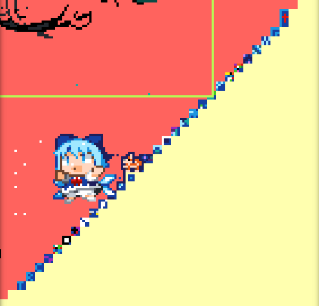

Our History
This historical record has been written by Scout107. They wrote the current version in a Google Document linked below. The historical record may not be up to date. It was translated by SwingTheVine from the document on May 1st, 2024. Some minor changes have been made to the formatting. Some minor changes have been made to people's names. More historical records can be found on our Reddit Wiki. The historical records on our Wiki were written by various people and may have more, less, or conflicting information compared to this page.
The Complete History of the Blue Corner
Introduction
r/place 2023, it was great guys. I had a great time in the Blue Corner this year, but now it is over. But, before I forget, I want to talk about what happened here so that we do not have to forget. This year was very dramatic and eventful and some even say the Blue Corner got the best story this year whether you know it or not. I am personally not the kind of person to say one piece of history is better than another, but this year sure has a poetic narrative that is easy for me to craft. Despite the fun we had though, and despite the lore that came out of it, I think most of us can agree that this was the worst r/place event to date. It took too long, was fairly derivative, started with a bad color palette, was infested with bots, and most of all it was simply meant to distract us from recent Reddit API changes. If you noticed, this year the logo for the blue corner and many other factions did not contain “r/” as part of that protest. We were no longer advertising subreddits, but communities that transcended reddit. This is the story of one of those communities, the Blue Corner.
Now, I could just go into 2023, but I don’t want to. I joined the Blue Corner last year in 2022, in the middle of the Tarik invasion. I joined because I hated the fact that he was turning the Blue Corner red, not so much because I was angry he attacked the Blue Corner, but because the red corner, if it is to exist, belongs in the top-right, not the bottom-right, so I was fine with this. After place ended I quickly wrote down my perspective on the 2022 event in a “partial history of the Blue Corner.” which is in the subreddit archives. Now, having been part of this community for a full year and then some, I want to do the opposite and write a “complete history of the Blue Corner” I have been doing some research this last year and I hope I can present a history of the blue corner that covers the three place events thus far, and then some. In this history I will also discuss place alternatives, because why not, but I hope to link to more complete histories at various points. Another reason I am doing this is because 2023 has alot of story elements that you cannot really understand unless you know the history of 2022, and many people may not be willing to study it, so I am including it here. I wish to explain how each place event affected the faction and how it was replicated in various place alternatives, particularly pxls.space which I am most familiar with, but I hope to focus on place.
r/place 2017 (31st March-4th April 2017)
“Individually you can create something. Together you can create something more.”
The Faction Dominated Era
The Blue Corner is a very unique community in r/place history. It is part of a very unique group of communities which I will call “factions” that almost all emerged in 2017. Artpieces in r/place can very generally be divided into 3 groups: art, proper, which is any art piece that is not simply flag with defined dimensions and a limited size that is usually complex and naturally leaves room for more art; Flags and other national symbols, striped flags in particular can usually expand indefinitely but only in a single direction; and finally factions, factions are communities centered around colors or simple patterns that can hypothetically expand in all directions indefinitely, and because of this these factions are usually focused on territorial control. There are some gray areas and subgroups and nuances when categorizing communities and art pieces on r/place, but most objects in r/place fit more or less into one of these three categories, and of these three categories, factions are the rarest.
The most notable factions on r/place are the Void, Erase the Place, the Green Lattice, Rainbow road, and last, but most of all, the Blue Corner. All of these factions have one, very simple thing in common: they all emerged in 2017, and only in the early stages of 2017, when they were dominant. Notable factions that emerged after 2017 are either limited in scope, such as the green line, a linear faction like rainbow road which is more easily incorporated into other artworks, or are griefing tools, such as the purple void xQc made, or are otherwise streamer made, such as the quackity duck lattice. This displays an interesting picture, namely that 2017 had unique conditions that were uniquely favorable to the creation of these iconic factions, conditions that haven’t been repeated since, and which will likely never be repeated again.
Early on, during the first place, the timer which forced you to wait 5 minutes to place a pixel was extremely restrictive. Most people did not have the patience to create an artwork of any significant size alone, and because people did not know what was coming before the event started, there were no communication tools which helped people organize their pixel placements to “create something more” as the place logo said. Because of this, initially the canvas was dominated by random pixels of random colors that were placed in random locations. The highest concentration of these random pixels occurred near the center and on every corner except the bottom-right, that’s because even though the corners, like the center, were being dominated by chaos, from the very beginning the Blue Corner brought order to the bottom right. You can check the interactive time lapse (which is actually a pixel-lapse) for yourself. (Link) Though the first non-white pixel on the bottom-right corner was not blue, but black, and then red, and then blue, the blue corner was not dominated by chaos at a time when every other corner was. Why was the Blue Corner so successful so early on? This seems like quite the mystery. Why was every other early “corner province” a chaotic assortment of random pixels while the Blue Corner was simply blue? The answer for this question may come, of all places, from r/europe. It seems that r/europe was the first faction to claim the bottom right corner. They sought to make an EU flag, but pretty quickly people started just making the corner blue instead, keeping the stars from getting placed, and eventually r/europe was absolutely incapable of achieving their goals in the bottom-right. The idea that the Blue Corner is the result of a failed attempt to build the EU flag is hilarious to me, but it just goes to show you how history can happen. (Source)
The Blue Corner that the EU flag turned into quickly became very popular with r/place at around the same time as the great green box. Whether or not the Blue Corner or the Great Green Box was first is hard to determine, but most people say the Green box was the first structure to emerge on r/place, and this would make the Blue Corner the second community-made structure ever. At this time, the Blue Corner also made a colony near the Green Box which I will call “the outpost,” the location where /u/Andrewcshore315’s narrative starts.
Factions similar to the Blue Corner and Great Green Box quickly emerged. There was the Rainbow Road, the Green Lattice, the Black Lattice, the Purple Blob, the Square Spiral, the other rainbow, pink lattice, the pink triangle, the pink and cyan square spiral, the yellow lattice, the red corner, and many more. Dozens of factions, most of which only appeared on the first r/place, were created as these simple patterns were all most people could co-ordinate in the first day or two of the event. Because people were not yet co-ordinated enough to make complex art pieces, the early stages of r/place looked more like a territorial control game, a war between various color-based and lattice factions fighting to be the largest things on the canvas as artwork and the occasional flag slowly formed around them. At this time, the Blue Corner was the largest faction, no, the largest community on r/place, and because of this, it became the largest empire on place, it controlled 1/8th of the canvas at its peak. This was the golden age of our corner, when nobody would fight us.
Our success inspired imitation. In the top-right corner, the red corner formed, the second largest corner faction. On the bottom-left corner, the green corner formed, a mere alternate location for the Great Green Box faction, and the third largest corner faction. But, on the top left, a fourth faction formed, the smallest notable corner faction of 2017: the pink corner. The pink corner was a tiny contiguous territory of pixels that controlled roughly 1/5th of its local chaotic corner region before the Blue Corner highway reached the top-left corner. This primitive corner faction was not able to bring order to its chaos before it was destroyed by the Blue Corner. No, the Blue corner conquered the top-left and created a brand new colony.
The various imitators, primarily the red and green corner, offended the Blue Corner, so our faction decided to invade these corners with pixels of blue. These invasions succeeded and directly led to the complete destruction of the red and green corners, when they were covered with art. But, the top-left corner was a different story. The blue empire lost the top-left corner when the subreddit r/purplepxls organized an army to take over the top-left corner making it the purple corner, the rebel corner, and they beat back the blue. When the purple corner rebelled, they were able to succeed because the Blue Corner had not only reached the limit of the territory it could hold on to, despite it’s size, but also fought offensive wars against other factions that were taking up precious pixels. Erase the place formed, destroying the highway of blue pxls that connected the top-left corner to the bottom right further weakening the Blue Corner’s image on the canvas, but this was still the golden age. It was simply our first major conflicts: the corner wars, three distinct conflicts, 2 of which we won, one of which we lost, and the highway war which we lost. Even still, we grew larger and larger because our home base would not stop growing even as our colony died.
In the midst of all these wars we changed our primary subreddit from r/bluecorner to r/thebluecorner, and then shortly after this, war began.
Many people want to go back to this time, they want to make a blue empire to rival the first on r/place, but I am here to be the bearer of bad news. That is unachievable. It always will be. Assuming that reddit gets better at killing bots, whether or not a faction can survive is dependent on how compelling its idea is to the user base of place. The fact that no factions are emerging in 2022 and 2023 shows that, now that people are able to co-ordinate, simple color-based, location based, and lattice based ideas are not stuff people are interested in promoting. Place-original content is falling out of fashion, people want to bring in stuff they find compelling outside of place. There is simply too many placers to make new factions, and because of the fact that factions no longer dominate, and never will, factions can’t make enemies unless they commit completely to griefing, and griefing would endanger the true corner making a true “blue empire” a thing of the past.
But, don’t think of it as something that will never come again, no. Realize that the time when simple patterns and colors dominated r/place was a truly one time thing, a unique experience, the only time colored empires could emerge. And what did the Blue Corner do? We were the faction that dominated the era when factions dominated the canvas. We are the empire of place, and our unique historical achievement can never be repeated by anyone else making us a permanent fixture in place history. We are the Blue Corner, we are the empire, and that can never be taken away. The Blue Corner, along with Rainbow Road and the Green Lattice, are the three great empires of place 2017, and no empires like us can ever emerge again, but of the three we achieved the largest size, 1/8th of the canvas, even if only for a time. The Blue Corner is not an empire, but it had an empire, and it had the best empire. We get to claim the title of empire and are more deserving of it than any other faction on place, but now in our current circumstance, we have the chance to claim a second title, a more noble one, the title of survivor.
The Fall of the Blue Empire and the Reconquest of the Corner
When the Blue Corner was at it’s peak, the streamer Destiny came online and he decided that he wanted to destroy us. I wonder why. Anyways, he told his viewers to target our logo and the true corner. His raid, even though it never covered the corner, destroyed our ability to defend ourselves, many of our soldiers were discouraged, and slowly, but surely, the Blue Corner was consumed by a multitude of artworks that took advantage of the chaos created by Destiny’s raid. Artwork also began to invade the other corners, the red, the green, and the purple, and the green lattice began to change from a white to it’s iconic black background. All of these changes after Destiny’s raid signaled that the age of factions, of empires, of massive color-based expansion was coming to an end and the age of art was beginning.
Most of the factions which emerged early on in r/place were being destroyed at the same time as us, but afew survived, and I find it useful to point out how each of them survived. The void survived because it was primarily a nomadic griefing tool. It’s original intent was to make the entire canvas black, a very normal goal for a faction, the natural enemy of r/erase the place which wanted to make the canvas white. Erase the place, or the white void, had a very different survival strategy. After the white void was destroyed by the American flag, erase the place took over a small triangle in the nook of rainbow road, a controlled but deadly force. Rainbow road, on the other hand, never collapsed because it’s linear design made it able to creatively co-operate with other art pieces. Green Lattice, on the other hand, was able to survive by becoming a nice looking background for small allied art pieces while Square Spiral was able to survive the end of the age of factions because it was so large and because it looked good. The Blue corner, on the other hand, was as good as dead...
But we survived. Our faction consolidated it’s efforts, it focused on rebuilding the logo to tell the world that we were still here and it defended the true corner to show that it would protect its home. When it came to defense, the faction was split on whether the logo or the corner was more important to defend, but once the logo was secured the faction was able to carve out a small territory by the true corner and slowly, but surely, reclaimed a small territory for its own under our logo. As we reclaimed our territory, we were divided between people who wanted to incorporate some artwork under the logo and those who wished to destroy it all. Eventually, those who wanted a clean corner won. We were also divided on whether we wanted a blue empire reborn or merely a presence on the canvas, but we were far to deep in the age of art for a new color empire to emerge, so we remained content with our 100x100 space.
The Legacy of the 2017 Blue Corner
The events of 2017 defined the faction in so many ways that can still be felt today. Most notably, our basic concept: blue in a corner, comes from 2017, but what that means has changed. Originally, we were the blue empire based in the corner, the corner was our home, but we were blue first and foremost, and an empire. Our victory was not defined by the purity of our corner as it has been in later ages, but by the size of our faction. Our ability to succeed in this way, the fact that we created the largest empire in the age of factions, was very important for ensuring our survival in both 2017 and in later place events. Even though we never would, and never could be an empire again, when the age of factions was over each faction needed to come up with a reason why it should survive, and of all the factions that did survive, the Blue Corner is the one that seemed like it should have died. Why should we, a faction of pure blue, have the corner? What could we do? Would we be a background and center of an alliance like green lattice? No. Would we be creatively incorporated into other artworks like rainbow road? No. Would we be migrating griefers like the void? Definitely not. So what were we? We became a monument to the continued legacy of the largest empire by portion of canvas controlled in place history, a celebration of all things place. We were the faction with the most prestigious legacy, so we had a reason, no, a duty, to survive. So we fought back and we claimed our space.
But the blue empire ultimately only gave a reason why we should survive, why we belonged on every place canvas from the first to the third, and if there’s a fourth that to. But, what would that place look like? That was decided in the tumultuous chaos of the reclamation. Our faction had many parties that still exist today. There are the imperialists on one hand who want to relive the great legacy by creating a new empire, and the monumentalists on the other who desire a sufficient defendable space to honor the great legacy; there are the purists who desire a pure blue corner with no art on the one hand, and there are the incorporationists who desire to let in artwork of various kinds, control it, and make the blue corner a beautiful piece of art in its own right. The old empire, according to the 2017 historian /u/sarosauce, was imperialist, but it was also incorporationist, which many people use to justify the position that artwork should be in the modern blue corner. However, during the reclamation, the Blue Corner became purist and monumentalist. It had too few men to become an empire, but the Discord which is generally monumentalist and incorporationist, did not have enough knights to stop what is called “the reddit hivemind” in the Discord, the hivemind in general is characterized and imperialist and purist. The purist tendencies of the non-Discord users outweigh the incorporationist aspirations of the Discord leadership while the simple lack of manpower in the Blue Corner prevented the Blue Corner, both then and now, from becoming an empire a second time, so the Blue Corner is monumentalist and purist today.
The First Inter-Place Period (4th of April 2017-31st March 2022)
There were five years between r/place 1 and r/place 2. During this time, nobody knew r/place would return in 2017, but some people, who were usually members of factions, did not want to let place go, they wanted to do it again. Because of this, many place alternatives were created, the best of which, in my opinion, is pxls.space. There were others, but I will mainly cover this alternative in my history.
Unlike reddit where you can place one pixel every 5 minutes, pxls.space allows you to place one pixel every 30 seconds give or take. Besides this, the game is also allows you to store up to 6 pixels which means, if you don’t place down a pixel, a hidden timer will slowly count down and give you a second pixel, and a third, and a fourth. The space between each pixel takes longer and longer until you have 6 pixels and are not able to gain any more pixels after that point. This “pixel chest” unique to pxls.space makes it a very different experience, especially when there is less than a hundred players online at any given time. The pxls.space canvases also tend to remain up for about a month before they are taken down and replaced by a brand new canvas which have become increasingly unique over time. Some of these canvases are fairly uninteresting and don’t play that differently from a square, but many truly unique ideas take place on the pxls.space canvases. It is going to be my goal to outline the history of the various “governments” which directed the Blue Corner on pxls.space and what generally happened. Again, I don’t know enough about other place alternatives from this era to write about them.
r/Blupxls (Canvas 1-4)
Initially, r/TheBlueCorner did not wish to discuss place alternatives on their subreddit, so a new subreddit emerged called r/Blupxls which organized the Blue Corner on pxls.space and other r/place alternatives. They had a good showing in canvas 1, but due to an invasion by the greens and a last minute void attack, the Blue Corner on canvas 1 was destroyed. On canvas 2, the Blue Corner was not able to gain a foothold due to the power of “the New Pixel Axis,” the villains of the first two canvases, and it remained insignificant on Canvas 3 due to the red lattice. On canvas 4, it did not exist because the canvas was a circle.
r/TheBlueCorner (Canvas 5-10?)
By the time Canvas 5 rolled around, official Blue Corner subreddit finally allowed the organization of place alternatives, so the official subreddit was advertised on the 5th canvas. The 5th canvas was also the first canvas where the Blue Corner was clearly visible on the final canvas. The Blue Corner would have mixed results in later canvases, sometimes appearing, sometimes not. Canvas 10 is the last canvas in which the Blue Corner was clearly visible for a while, but they may or may not have been operating from the main subreddit up to Canvas 15.
Ocean (Canvas 16-27)
Ocean was a simple blue background that was not tied down to the corner, however I believe it was inspired by the Blue Corner which is why I placed it in the history. Ocean fought many wars, it was a controversial faction and eventually disbanded for unknown reasons on canvas 27. They acted as the Blue Corner on Canvas 19 and 23 further tying them to the history of the Blue Corner on pxls.space
The Blue Empire (Canvas 28, 30-30a,37,62)
The Blue empire was created by the user Temriel. It was originally a revival of the Blue Corner, but it would quickly lose it’s distinctively cornery nature, especially because the canvas had no corners. The faction would continue in 30 and 30a (a unique transitional canvas that lasted for a very brief period of time) only to be discontinued and then re-continued during canvas 37. The faction experienced a long hiatus until it was revived in Canvas 62, but in none of it’s iterations was it anything more than a blue corner inspired faction, not a true Blue Corner.
Blue Corner (Canvas 39-40)
The best recorded Blue Corner revival on pixls.space occurred during Canvas 39.
During this canvas, a small faction which wished to recreated the Blue Corner emerged, but they eventually garnered everybody’s hatred which caused them to get destroyed on both canvas 39 and canvas 40.
Canvas 39 was the first canvas to be covered by the only “pxls.space newspaper” to ever exist: The Pixel Piper.
The Pixel Piper’s first two editions are the best two sources for this iteration of the Blue Corner in existence.
Pixel Piper Canvas 39 Edition: (Link)
Pixel Piper Canvas 40 Edition: (Link)
The Blue Corner on Pxls Space Overview
And that is all the Blue Corner did at this time. As I write down the history of the Blue Corner on pxls Space I notice just how lackluster each and every one of these revivals are. They are each interesting in their own right, but man there is not much information, nor was there much success, in these revivals. Many of these revivals were only inspired by the Blue Corner and none of them properly adapted to the conditions of pxls space which inevitably led to their downfall. However, the Blue Corner would return to pxls.space, and it would do so better than ever. During this first interregnum, the Green Lattice appeared, great or small, on almost every single pxls.space canvas and their ideology became the prominent ideology in pxls.space. Pxls.space is a place alternative where every faction draws backgrounds or art or both and backgrounds must always give way to art. Each blue corner revival adapted to this meta to some extent, but none were very successful for very long during this period. Even though the Green Lattice has been pushed out of pxls.space today, they are still the source of this alternative’s modern culture.
r/place 2022 (1st-5th April 2022)
“This year, we intend to do the impossible, create a sequel that is better than the original.”
And that is what they did.
The Countdown
Reddit announced that Place was returning afew days before it actually happened giving all the factions time to prepare, and we were no different. I can’t really say much else since I didn’t know about place till it was already going, but ChippedJosh’s history can tell you more. Indeed, almost all information I can provide on the first corner can be found in his history. (Link)
The First Corner (1k,1k) in the original canvas, the Old World.
With our plans intact, we immediately took over a large area in the bottom-right corner. While we were expanding, a line of Amongi (people have stopped using this term) invaded our territory which started the first Amongus war, a war we quickly won. During this war, we also gained Cosmere as allies and decided to cede some of our territory over to them. Besides cosmere, we were also neighbors to Eminem, r/placetrees, a line of turtles, and some Ukraine hearts.
We did not become a massive empire stretching across an eighth of the canvas, but even still at this time we were about the same size as the late Blue Corner in 2017 despite the fact that there were now more people in place. We returned, and it is reasonable to ask and answer one more time why we were able to return after a five year hiatus. What was so compelling about the Blue Corner that caused people to join it, that caused it to re-appear in 2022?
I have a few ideas for why the Blue Corner is so compelling. Firstly, the Blue Corner on r/place 2017 was so absurd. It was so plain! How could there be an entire faction dedicated to making a corner blue? How could it possibly be this big? This stark contrast was a natural advertisement to those on the canvas, an advertisement that would compel many to look deeper, and then they learned of the Blue Empire. They learned what a place icon we were, and that made us respected, it showed place that we belonged even if we did not seem to fit at first glance. Not only did we belong, we were distinctive, and we as a faction help to define what place is. The essential “placeness” of our faction also helped encourage many 2017 veterans to rejoin the corner for the event. There is an inherent sense of place-based digital nationalism inherent in this faction which inspires members to fight for the faction again and again, making other artworks seem unimportant and secondary in comparison. The sense of loyalty is very strong in this faction, I feel it too, and it is kind of surprising. It is fascinating how people can unite over making a corner blue. I don’t know exactly how this works, but it seems joining the faction helps people identify with a piece of internet history and makes them feel more important than they honestly have a right to be. It’s all just fun and games, but to some extent it does not feel that way.
I do have to say, as someone who joined this year, the Blue Corner is a fun faction to take seriously in a playful way, as much as that makes sense. The faction has an interesting, unique dynamic, clear goals, and has had a unique set of enemies and stories it has had to face throughout the years. It is a fun team to play with on place, it is fun to help the team achieve victory in the way that we have defined it. It is awesome how we won, in our monumentalist definition of winning, three events in a row, how we achieved our faction goals and were respected for it. Even though factions no longer dominate place, we still retain that factional sense of “winning” and “losing” that inspires people to fight and to not give up, to try even when it gets hard, and ultimately to achieve our goals.
Those goals, in this iteration of r/place, were to keep the True Corner blue, keep the logo up, keep the border secure, and keep the land pure.
The Lattice Wars
The Blue Corners design was based on its design at the end of r/place 2017. At this time, the blue corner was a region of blue pixels surrounded by a light blue, lattice-like border wall which included the faction logo. This was a very visually pleasing design, but it backfired. The blue lattice border-wall was only partially built during 2017, but it was fully built during the start of 2022. Very quickly, this completed lattice gained a mind of its own and started invading the Blue Corner. There were three lattice wars in total. During the first two, the lattice invaded the Blue corner, the Blue corner fought back, won, and we thought we had it under control, so the war ended. We were wrong, so a second war started, then a third. When the third war started, we decided this wouldn’t stop being a problem, so we decided to destroy our beautiful lattice and replace it with a safe black border instead. The offensive which caused the destruction of the blue lattice was called the X-911 offensive after the coordinates where it occurred, X-911y. During this offensive, the “balls 1st division” would attack along the X-911 splitting the Blue Lattice in two. The faction would then conquer the northern half of the lattice and then the southern half. By this offensive, the lattice was quickly destroyed.
You may notice if you watch the Blue corner timelapse (Link) closely that, even though the lattice invaded the Blue Corner four times during the lattice wars, only three wars are counted. Well, I believe this is a simple oversight. Three lattice wars are counted, but on the timelapse you can see 4 distinct times when the blue lattice clearly expanded into the Blue Corner and one of those occurred during a period labeled “peacetime.” The invasion directly after this first war, which I will call “the lost lattice war” was clearly forgotten because it was significantly smaller than all the rest, but you can clearly see on the timelapse the lattice outgrowing itself and the Blue Corner performing tactical decisions to fight it.
Also, you may want to know who was responsible for the Lattice wars. The answer is, we don’t know. There doesn’t seem to be a faction responsible for the four lattice wars on the first corner, thought there almost certainly was some group responsible for the fifth lattice war on the second corner, but we just do not know who that group is, so in the end we say each lattice war was a period in which the Blue Corner saw the lattice as hostile and either defended against it or attacked it, but we do not know if there was a faction that had a constant attitude of aggression towards the Blue Corner that would make this all one conflict. You will note late on in this history in 2023 that, when I discuss Zugu, I will say that though there were multiple distinct invasions, like with the lattice wars, it was all one war because Zugu was aggressive toward us for a continuous period that encompassed all the invasions making every invasion a single long war. Other wars, such as the Amongi wars and the Bratishkinoff wars were distinct wars because they were not prolonged periods, but distinct episodes of conflict. I will note that essentially every conflict the Blue Corner experienced during r/place 2022 was a distinct episode and not a prolonged period, however it is quite interesting that all the lattice wars occurred at a single period when no other conflict occurred.
One of the most interesting questions about the lattice wars is simple. Why was it that, during the lattice wars, the Blue Corner was only griefed by the Blue Lattice? This is an interesting question because I think it reveals something about the psychology of griefers. As events in the future will show, some people just don’t like the Blue Corner, and they generally say it is because the corner is so plain. Some people probably saw this design right next to the blue corner, said “this is prettier” and decided to expand it into the blue corner instead of building their own art because this alternative design was already well established. When other griefers saw the design expanding into the blue corner, they didn’t so much care about making their own distinctive mark as joining a side that seemed it was already bringing the blue corner down. The Blue Lattice, in it’s short history, even though it griefed the Blue Corner, also seemed to protect the Blue Corner from other griefs, and evidence for this griefing lightning rod of the blue lattice can also be found in the next episode, the QRMongus war, which might be the best proof that the Blue lattice, despite all it’s problems, helped to keep our corner clean, potentially more than it hurt?
I personally find it quite sad that the lattice was destroyed. It was a nice, distinctive border that really added to the aesthetic of the corner. If I had the power, I could bring it back. But such beauty seems to come at the price of constant war, and this price was ultimately something we were unwilling to pay, so we gave up our blue lattice and exchanged it for a boring, generic, but safe single pixel border. Originally, the border was a shade of blue, but eventually it became and remained a generic black border. But the black border did save us from being invaded by our own border, but the thin border also made territorial disputes with our neighbors more common, so it has its tradeoffs which never perfectly prevented civil war.
The QRMongus war
After the Lattice was destroyed, a curious event happened. The void returned, a fact that is not too surprising considering the fact that some people will always want to see the world burn. However, the surprising fact is that members of the Blue Corner Discord apparently performed an unprovoked raid on the Void’s Discord server needlessly antagonizing them. The balls 1st division, the ones that performed the x-911 offensive, was responsible for this idiotic Discord raid. Even though they did good for us at the start, man was this dumb, and even though the Blue Corner diplomats were able to smooth over the situation, it still caused the void to temporarily declare us enemies.
Besides this unseemly event, right after the Blue Lattice was destroyed, the amount of “confetti” in the corner started to grow rapidly while we also began to infringe on the territory of neighboring communities. Then, it became clear that a vast multitude of assorted communities were expanding into our corner, possibly seeing the destruction of the lattice as a sign of “expansionists intentions” among the Blue Corner. Soon, it became clear that the rickroll QR code was the most powerful community of invaders, so we quickly made a deal with them to allow them a place in our corner in exchange for them shrinking the size of their QR code and moving it away from the true corner. We would eventually make a second deal to change the location of the code and change it to a shade of blue, but this plan would fall apart when the first expansion occurred.
/u/chippedjosh notes 4 distinct groups who invaded our corner at this time:
- The QR code
- A collection of Amongi
- Rouge trees
- Miscellaneous groups.
The miscellaneous groups can be distinguished by the distinct artworks they made, but there is atleast 17 unique co-ordinated groups expanding in the Blue besides the three already directly specified, and on top of this the last remnant of the Blue Lattice on the top right beside the logo expanded into the Blue Corner meaning that the fifth lattice war, by my count, but not by the traditional count, also occurred at this time. I believe that the most common name for this period of chaos is the “QR code war,” but I prefer what I believe to be the second most popular term for this war “the QRMongus war.” The first name comes from the fact that the QR code was the principle enemy of the Blue Corner, but it should be noted that for a large portion of this conflict we had a treaty with the QR code and were at war with other factions for most of the period. The name “QRMongus” is a combination of the 2 principle invaders of the war, the QR code and Amongi and signals the fact that there were multiple groups involved in this war, but you would have to study to know that during this conflict the Blue Corner was technically invaded by atleast 20 distinct groups of various sizes and confetti all at the same time. However, for future reference I will also need to note that this war technically includes both the second Amongus war and the Fifth Lattice War.
After we made peace with the QR code, we defeated the second most relevant enemy, the Amongi, and then cleared out the miscellaneous invaders. Once we dealt with the miscellaneous groups, we were in a better position to make a deal with the QR code and have them move to the bottom left of our territory and change to Azure and Blue instead of black and white. However, we never pushed the rogue trees out of the Logo region they overran partly because they were strong, but mainly because the canvas expanded shortly after this. The rogue trees ultimately kept the land they conquered, the only invader to gain any permanent territory, as when the canvas expanded we gave our old territory to Quebec, a flag that was in the center of the original canvas but was pushed out due to constant war with other factions. In an almost poetic twist of fate, us handing over the old blue corner to them would cause them to not only gain a permanent and largely undisputed territory, but it also placed them in the exact center of the final canvas making their early defeat in those “king of the hill wars” that took place in the early central canvas be their ticket to become the undisputed king of the top of the final hill. Quebec, you are welcome. I am glad our old corner turned into you. This, in a sense, gave both us and you a prominent position in the center of the final canvas, but it was ultimately the whims of fate that gave this gift to us.
I am both sad and glad that the canvas expanded at this time. The reason I am sad is because the QR Code was the only faction that has ever offered to build art on the blue corner that is strong enough to keep it there. If we had remained on that corner longer and been forced to accept the QR code, then that might have been a catalyst to reform the blue corner and help make it incorporations. After that, in both 2022 and 2023, opportunities never arose to make the blue corner an art friendly place, to make it incorporate some artworks in a unique way. Yes, the Amongi were ultimately strong enough to force their way into our corner, but they were ultimately to repetitive and dominating for us to allow them in the corner. On to five amongi positioned in a clever way meant to play out some scene in the blue corner would be something I could appreciate, but you cannot hide amongi in the blue corner and the Amongus community was not very creative with how they placed them so they were nothing but a rash on the pure blue canvas. The QR code was the first artwork that had a real chance of being incorporated into the core territory of the Blue Corner ever since the first Blue Corner civil war back in 2017, and ever since then the Blue Corner has never had a chance to creatively incorporate artwork inside it. But I am also glad that the Blue Corner moved and that the expansions happened because of the stories they opened, and because the expansions also helped to sate the expansionist appetites of other communities which helped the Blue Corner to keep the role on r/place it had carved out for itself.
The Second Corner(2k,1k) In the First Expansion, The New World
Everyone was shocked when the canvas doubled in size. Nobody expected it, nobody planned for it, but the Blue Corner immediately knew what they had to do. We moved to the new bottom-right corner. Some people were confused, yes, but generally the faction knew what it was doing, so we were quickly able to reclaim our rightful space and two great things happened because of it. Firstly, we didn’t have to negotiate with the QR code, and secondly we were able to take over a territory that was maybe as much as twice the size of our first corner, a great achievement! However, the corner would soon host the most difficult challenges faced by the faction yet.
The Tarik Raid
Not much of note happened on the second corner until the streamer Tarik decided to invade the Blue Corner. He sought to turn it red, then purple, and ultimately to draw a self-portrait on our corner. As I mentioned earlier, I joined during the Tarik invasion and my previous narrative, a partial history of the Blue Corner, started here. (Link) I would encourage you to read it as, even though this history will cover the same events, that will have a different, shorter, and more concise narrative I do not with to repeat here. I was there for the whole story. I saw the Blue Corner turn red, then purple. I saw us fight the text, cover up his face, but ultimately, I saw as call in the Void to destroy him, one of the most based strategic moves the Blue Corner ever did. We called them in, asked them to turn three quarters of our territory black, cause Tarik to leave us alone, and to just not destroy the True Corner. They did this, it wasn’t as good as turning our territory blue again, but it was good enough. The Void destroyed Tarik and then they moved on, leaving us to clean up the rest. It was beautiful.
The Knights of the True Corner
It was during this time that my “character arc” started of course. Due to the events of 2023 and the fact that I am now a mod on Discord, I will not claim I was unimportant to the history of the faction, in fact I believe I was very important, though I had more of an affect as a non-mod than I did as a mod. (I will explain later) Anyways, over the course of 2022, I saw that the Blue Corner was very, very disorganized and it was my hope to help re-organize the blue corner. I succeeded beyond my wildest dreams to the point that it ultimately landed me a mod role, but I need to start talking about it now because this is when the initial seedling of the idea that would be the “four unit system” first came into being. The four unit system was part of the organizational structure of the Blue Corner at the end of 2022 and for all of 2023, but it started here with the concept of the “True Corner Knights.”
Or actually, I should say it started in 2017 with the debates about whether or not defending the logo or the true corner was more important for the faction. Ideas were being thrown around even at that time of a unit specifically meant to defend the logo... No, the earliest proposal for something like a unit specifically meant to defend the logo was thrown around on the first day of r/place by /u/cooltrain7 on r/bluecorner, our first subreddit! (Link) However, this proposal got nowhere in the end and the Blue Corner remained largely unorganized until 2022.
Basically, when I fought in the Tarik war, I saw that we found the True Corner to be very important, but it seemed to me that far to many people were placing on the true corner pixel. We did not need the whole faction on it, even in the midst of a massive raid, to keep it true blue most of the time. We only needed like... ten people I thought. We could do more, be stronger if only others did not place on the true corner. So, I proposed to the faction that we make a unit of 10 people to defend the true corner and tell everyone else to stop doing it. Nowadays, with more experience under my belt, I realize that the Knights of the True Corner should be the only people on the Discord placing on the True Corner as those not on the Discord can’t be told to not place there, and we did receive enough help from the disorganized knights to simply make it the case where the rest of the Discord didn’t to have that many people on the true corner to keep it blue. The disorganized knights, though, are ultimately critical to keeping the true corner pixel blue most of the time.
Anyways, my suggestion of creating the True Corner Knights largely got ignored. However, I knew I had a good idea, it’s just nobody would listen. I eventually decided that the Blue Corner was largely governed by consensus anyways, and if I made an informal group I had a good argument for why it should exist and why people should respect it so, at some point, I am not sure if it was between the Tarik or xQc invasions or if it was between the xQc and 5opka invasions, but I decided that I would found the Knights of the True Corner by putting “true corner knight 1/10” in my Discord server nickname to show I was the first and how many recruits I wanted. I then tried to get recruits for my unit, tried to vet them by timezone, and I believe there were 9-11 members of my unit by the end of it. Anyways, this is initially how the Knights of the True Corner organized. Our main goal was to ensure that the rest of the Discord knew they didn’t need to worry about the True Corner and could go and do other things, and we constantly reminded them of this, and leading this group is what my participation in the faction mostly consisted of during 2022 until the adoption in the 4 unit system which comes much, much later. Anyways, that is the origin of the Knights of the True Corner, the oldest unit of the 4 unit system and the reason why I started it.
Azure Angle Incident
Anyways, after the end of the Tarik invasion, a very notable event happened and I am surprised all the other histories of 2022 fail to mention it, just like they fail to mention the first Amongus war. Even though I was awake during this conflict, I forgot about it! That would be a civil war that happened within the Blue Corner. Basically, in the midst of the confusion that was going on while we were rebuilding from the fact that we called the Void in to destroy Tarik, some Azure pixels started being placed near the True Corner, and some people in the Discord started getting the strange idea that we were “changing shades” even though the mods had made no announcement about this, and people on Discord began to argue that we ought to change to this better shade of blue.
I, being a lover of history and tradition as I mentioned in the previous post, would have none of it. I joined the Blue Corner because the red corner tried to take over the bottom-right, completely going against place tradition! Take the top-right you red idiots! Anyways, I wasn’t going to let the corner be turned red, black, or purple or this weird new shade of “blue” anytime soon. Of course, I didn’t have much influence, but I did join in the cacophony of voices that insisted we were not changing color, and eventually the mods vindicated us, and eventually we defeated this weird Azure Angle people wanted to turn us into. It never took over more than a 25th of our territory, but the incident was still notable enough and could potentially be seen as a Blue Corner civil war. However, it may not be. I have a theory that the QR code faction may be partially responsible for this event.
Azure Angle Visible in the Bottom Right
During the cleanup period we were also invaded by a rainbow flag visible in the top-right of the image.
xQc invasion
I fell asleep in the midst of the aforementioned incident, so I was not awake to experience the next part. That next part was the xQc invasion. Essentially, xQc had decided to grief r/place, and earlier on during the second day he decided to go to war with OSU!, but after constantly losing to them he decided to grief the Blue Corner and the bottom-right region of the canvas surrounding it. This cemented him as a major villain of r/place and the fact that the Blue Corner was barely visible during his invasion likely demoralized his troops, but eventually he went offline, and when he went offline we retook our land, and when we retook our land he did not return. This invasion, this slaughter, helped to solidify another tenant of Blue Corner strategy. We may not have bots, we may not have streamers, we may not have numbers, but we don’t just rely on our legacy to carry on to victory. No, we win in the end because we are persistent. Even if the enemy kills us we will come back again, we will not accept destruction. Just as we did in 2017, we will reclaim our land. Persistence and an unwillingness to give up is one of the defining characteristics of the Blue Corner and it has constantly let us come out on-top in the 2022 and 2023 meta of streamer invasions even if, for a moment, it looked like we were dead.
The Balkanization of the Blue Corner
But, as inspiring as it was for our faction to come back from the dead, we still experienced alot of harm due to xQc’s invasion that we could not recover from though xQc alone was not responsible. Many smaller factions took advantage of the chaos and the late-night timing of xQc’s attack to establish their own territory in the Blue Corner as one million things happened at once. This period of Blue corner history was far more chaotic than the QRMongus war and with much worse consequences for the corner, but here is my best timeline of the events that happened.
Essentially, the Blue Corner tried to reclaim it’s original territory, but abunch of incorrect shades of blue were being thrown in which slowed down the reclamation process. Smaller factions took advantage of this and began to reclaim territory. The Blue Corner, in response to this, began to build a border within it’s own territory in order to avoid conflict with these factions, but this border collapsed.
New Blue Logo
The Blue Corner also developed the weird habit at this time of building their logo extremely close to the bottom of their territory, endangering the integrity of the True Corner. The width of the logo also came to largely define how wide the faction’s territory would be, which is interesting, and divided the previously united blue field into two regions, a “core” region below the logo and a more expansive region above. Whatever the case, the smaller logo and it’s strange location helped to redefine the territory of the Blue Corner in a way that adapted to the coming balkanization. When I woke up and pointed out how much territory we lost, I was told not to worry about it as we expected the canvas to expand again, which was reasonable considering the fact that when day 3 began, the canvas was both not square and already full of art.
Sixth Lattice War (Fourth Lattice War)
While all this was going on, either the Blue Corner itself or some outside group decided to rebuild the Blue Lattice. If it was the Blue Corner it was likely done to more clearly delineate it’s new, smaller claim, but if it was done intentionally it was clearly a mistake as the lattice immediately began to outgrow it’s designated size and invaded the territory of the Blue Corner beginning a sixth lattice war. (This is generally considered to be the fourth, not the sixth, lattice war but this is because of the 2 aforementioned forgotten invasions. That happened on the first corner.) To combat this, the Blue Corner finally switched to using a generic black border and began the process of destroying the lattice one last time.
End of Third Amongus War (Second Amongus War)
But, while the Blue Lattice still dominated the western territory of the Blue Corner and then some, the Amongi began to invade the eastern portion of our lands beginning the third Amongus war. However, this is usually considered to be the second Amongus war either because the first war in 2022 was completely forgotten or, more likely, because they count the QRMongus war as something other than “the Second Amongus war” which is kind of nice because ignoring the fact that the QRMongus war was the second Amongus war means that each corner officially experienced a single Amongus war which is a very neat way to divide things, but it isn’t true and that is really what matters. The third Amongus war started here, on the second corner, and both the first and second took place on the first.
Anyways, as the Amongi invaded they came into conflict with the Blue lattice which means that the sixth lattice war quickly turned from being a war between the Blue Lattice and the Blue Corner to being a war between the Blue Lattice and the Blue Amongi over the Blue Corner. If a name more catchy then the “Balkanization of the Blue Corner” is to be given to the entire conflict, then I guess the “Lattice-Amongus” war is the best name that can be given to this conflict as it reflects the primary participants in the conflict besides the Blue Corner, and despite the fact that the war happened on our territory we were really a minor player for most of the war.
The Green Line Invasion
In the midst of this conflict, another faction began to invade us: the Green Line. r/superstronks green line was gunning directly for the true corner forcing our faction to turn their attention away from the increasingly worsening situation of their corner to divert the attention of this most dire, green, threat.
The 5opka Invasion
The Blue Corner was victorious in it’s battle to redirect the green line, but the Amongi were victorious in their war against the lattice to overtake the Blue Corner. The Amongi even started expanding the Blue Corner and placing their Amongi in the expansion! But even though some toyed with the idea of accepting them, we ultimately knew that we had to destroy them, so we fought... And we fought. I joined an offensive led by the moderator q77e meant to push back against the Amongi, but we were never able to destroy the seventh Amongus under the logo, to the left of the True Corner before the third streamer of the corner, 5opka, invaded.
At first we didn’t know what was going on because he used Cyan, a shade of blue. Some people again thought that it was a color change, but soon we figured out that we were being attacked by a Russian streamer named 5opka. Quickly, we figured out that we could not fight him, so we defended the true corner with all our might, but people began to think we might finally lose. Some people mentioned calling on the Void, but that was a 1 time thing. We could not do it again. However, there was hope that the canvas would expand soon, after all we knew it ought to expand...
And then the canvas did expand. We fought a hopeless war, but we were saved by the bell. The canvas expanded, 5opka stayed put and we conquered a new territory at the new bottom-right of the canvas.
The Aftermath of the 5opka invasion (near 1k,2k)
However, just like the story with 1k,1k didn’t end when the Blue Corner left, but instead Quebec took over, so to the story of 2k,1k wasn’t over, but this time 5opka, our invader, took over. Now, from the remnants of our old corner, 5opka expanded, quadrupling in size taking new quadrants to the west and south of our second location. This region became the battleground of streamers for most of the remainder of place, but the northern section of the Blue Corner which we lost during the xQc invasion remained free for smaller communities to control. I find this fact interesting because it is likely the case that, if xQc did not invade us, then we would of retained our whole territory until the 5opka invasion and then our whole territory would have been lost to streamers until the end of r/place, but because the xQc invasion caused us to lose that territory many small communities were able to find a place for themselves and remained safe, though they were on the border of streamer wars, for the rest of the event, so the smaller communities of our northern former corner can thank us for giving up that territory after the invasion as it gave them a permanent place on the canvas, and not a transitional one like their south-western brothers.
As for the streamers which fought in “the 5opka region” or “the southern second corner” and the “post-corner region?” Well, after 5opka went offline, small communities began to take over, but before the transition was complete, a supposedly streamer-made self-portrait of a guy who calls himself “Messiave” was made. A pukish-green pattern made by a streamer I can’t identify then took over the the territory and then the territory expanded south. The french then (attacked?) the region by placing baguettes on it before it was taken over by the streamer IKOI. IKOI’s logo was then covered up with a picture of a penis... and then a baby with the word “Peace” and a heart under it, and then after one last french grief it was taken over by a bunch of small arts and a small Void. The rapid changes on the canvas and the presence of the french indicates that an underrated and very interesting streamer war took place here. I wonder if someone else will investigate.
The Third Corner (2k,2k) in The Second Expansion, the Underground.
Right after the canvas expanded we immediately made our way over to the new corner, leaving the old corner to whatever fate may befall it. Sure, it may have been preferable for the second Blue Corner to be given to a semi-related faction like Quebec so that the Blue world order’s influence may be clearly seen in that place on the final canvas, and not merely subtly seen by means of careful analysis of the timelapse. However, we were just glad that the expansion saved our corner, and our legacy, from the overwhelming 5opka invasion. At the same time that we were expanding, a group of French streamers made a massive French Flag on the bottom-left portion of the canvas. Even though this was annoying to most r/place communities, I and many other members of the Blue Corner realized that this event was truly a stroke of amazing luck on our part as many streamers had targeted us in the past because “we were so boring,” but this French flag would be a truly irresistible target for any streamers on r/place and would divert their attention away from us. This prediction turned out to be true as streamer after streamer joined in the great French Flag war of 2022 and because the remainder of our history mostly dealt with neighbors rather than random third party streamers coming in and destroying our place.
Early Expansion and Our Neighbors
The neighbors of the third and final Blue Corner of r/place are very notable for afew reasons. Firstly, our last neighborhood was very different from the first two neighborhoods we resided in during r/place 2022. In both the first and second corner, the Blue Corner had Cosmere as a neighbor to our northwest, some hearts as our northern neighbors with either the german flag or german allies above them, and abunch of smaller factions to the southwest. On this final corner, we only had two neighbors: r/AmericanFlagInPlace and the streamer Bratishkinoff. Each of these neighbors, particularly Bratishkinoff, was very important for the later history of the Blue Corner, so I find it important to discuss both of them at the start of this section, starting with the American Flag.
r/AmericanFlagInPlace
r/AmericanFlagInPlace started 2022 in the center of the old canvas, quadrant 1, which early on was the primary battleground of r/place. The Old Center wars are another of those under-discussed events in r/place history that are clearly very interesting if you look at the timelapse. During those wars, a bunch of national flags were battling for their place in the center of r/place’s canvas, and the twists and turns of the conflict were numerous as different flags who were losing the war began to migrate away and find more secure locations on the canvas. Ukraine was the first major loser of the Old Center wars because their massive flag near the top of the canvas made their secondary locations seem redundant and pointless, so the Ukraine flag in the old center was quickly covered up by the rest of the communities in that region.
The Quebecois were the second big losers in the region. They had already been firmly pushed out of the old center by Turkey long before the canvas expanded, but their defeat ultimately turned into victory since, as I mentioned before, we gave them our old corner when the canvas expanded and that allowed Quebec to take over the actual center of the canvas.
But neither Ukraine or Quebec experienced the most griefing in the old center during those conflicts. No, the most heavily attacked flag in the Old Center was the American flag, which is strange considering the fact that r/AmericanFlagInPlace is the least expansionist American Flag faction out there. Basically, r/AmericanFlagInPlace tries to follow the US flag codes as exactly as possible, so even though their striped pattern would hypothetically allow them to expand infinitely to the right considering Place flag traditions, r/AmericanFlagInPlace does not accept this possibility for expansion as such extended proportions would go against the US flag codes. This means that the American Flag was the least threatening flag in the region, but they were still constantly attacked from all sides and by the Void. If I am being very honest, the constant attacks on the American Flag do seem to be a product of how popular Anti-Americanism tends to be worldwide which made the American Flag the least offensive flag to grief for most people, including Americans, which caused them to have the hardest time in the old center.
When the Canvas expanded for the second time, r/AmericanFlagInPlace decided that it was time to change locations. A new set of coordinates popped up, and these coordinates were more American than ever: 1776, 1776. America decided that now was the time to give up their position in the old corner which was heavily contested and to hopefully find a permanent place for themselves on this canvas. In the end, they were very successful in their goal. A few important things happened when they made this move. Firstly, the American flag did find a good location at the right time. Not only were they neighbors to the Blue Corner, which would make them noticeable to every place veteran, they were also not attacked nearly as much after they moved. Secondly, the wars in the old center started to draw to a close as the remaining factions became content with dividing up the space left over by the American Flag, with Chile, a complete wildcard, taking over most of it, and with other flags, namely the french one, drawing the attention of most of the canvas.
When the American Flag moved, they incidentally became our neighbors. I do not believe the fact that they were near the Blue Corner influenced their decision to move there at all, but they did take us into account once they did. They immediately became our allies and they remained so for the remainder of place, but not much important stuff in our diplomatic history happens after they become our allies which is why I wrote so much about them in this section.
Bratishkinoff (Frog Guy)
Our second neighbor was the Russian streamer Bratishkinoff. I won’t write so much about him here firstly because I do not know much about what he was doing before he became our neighbor, and secondly because he is so central to the remainder of our history that giving him too much of an introduction here would just be unfair. He became our ally at one point, but this fell apart for reasons that will become apparent. The only important thing to note so far is that the streamer respected us and did not try to destroy us. This simple act has made our relationship with Bratishkinoff far better than our relationship with any other streamer and people in the Blue Corner tend to have far better opinions of him than the rest of Place has. If you aren’t from the Blue Corner and don’t like Bratishkinoff because of his other actions, such as griefing Genshin, and can’t imagine why the Blue Corner likes him so much (and honestly it got a little too much in 2023) just remember that every time the Blue Corner interacted with a streamer up to this point, that streamer was actively attempting to destroy the Blue Corner, and many did. Destiny, Tarik, xQc, and 5opka, all of them destroyed us. Sure, Mizkif did help us fight Tarik because, when we called on the Void, he was part of that faction and helped us abit because of that. But really, our interactions with Bratishkinoff would end up being the best interactions we ever had with streamers up to that point, so “Bratishkinoff” is a name that means something very different to the Blue Corner than to other communities. From our perspective, he was the only streamer decent to us, and because of our limited view we saw him, for a time, as the only decent streamer.
The final thing I will not is that he drew a self-portrait of himself by our corner where he was wearing a frog hat, atleast I think it was kinda a self-portrait. Because of his art, the Blue Corner called him “frog guy” for the entirety of 2022 because it was just easier to remember than “Bratishkinoff.”
The Blue Corner’s design
We could have had more neighbors than just these two as the timelapse clearly shows that many smaller communities were staking out their own space in the territory that would eventually be taken up by the American Flag, Frog Guy, and the Blue Corner. The Blue Corner, for the first time ever, wasn’t square, but a rectangle far taller than it was wide. Also, the logo was again placed very close to the bottom of our territory, something that annoyed me for the entire event. However, despite these problems, there was one nice thing that happened. The territories of Bratishkinoff, the Blue Corner, and American Flag in Place all formed a neat square around the bottom-right creating a sort of “extended bottom right corner”
Other allies
I will also note that while we were at this corner we joined a larger alliance called the “southern alliance” that included the American Flag and Argentina.
First Bratishkinoff War
After a short period where all the people in the bottom right were setting up, a group of “disorganized knights,” that is knights which are not on Discord and therefore cannot easily be directed by the Discord, began to encroach upon the territory of Bratishkinoff. After this reached a critical point, the streamer decided to attack the Blue Corner with a flood of white pixels in order to “teach us a lesson”. And that he did do. He focused on destroying the logo, and once that was done and the corner in general was in chaos, he stopped the attack. He did not wish to destroy us, just punish us for not controlling our borderlands. This is the first time our simple black border caused conflicts with our neighbors, something the wider blue lattice might have prevented.
The most important consequence of this war was that it destroyed our logo, and for some reason in the process of rebuilding the logo it inexplicably moved seven pixels to the left. It was probably when this war occurred that I first realized the Blue Corner would need a sort of “Knights of the Blue Logo” and “Knights of the Blue Border” to properly manage its territory and prevent future wars. It was at this time that I probably started proposing a 4 unit system, but the system would take some more time to develop. I will also note that between this and the next conflict, the United States expanded their flag southward.
Second Blue Corner Civil War?
Shortly after we began to rebuild, something strange happened. Bratishkinoff, the streamer, decided to make the background of his frog guy art blue. We don’t know why he did this, we did not ask him to, but he did. According to my old history, the streamer thought we were similar to a faction on a Russian alternative of r/place that was meant to be a background to art, and it was undoubtedly also meant to be a symbol of friendship. This turned out to be a very 89 move.
Wait, what do I mean by 89 move? Well, basically, at this time, he also wrote the numbers “89” beside the frog guy. Abunch of redditors obviously tried to turn this into 69, but his community wanted it to say 89. Why? Well, we were confused at first to, but eventually we learned that “89” was the score he got an an iq test he did on stream once, so his chat often spammed that number in the chat when he did something stupid. Hopefully in line with that tradition I tend to jokingly refer to his actions that are both dumb and very well-intentioned as “89 move” or to him as “89” when he is doing them, and it seems to catch on some.
Well, why was this move so 89? It turns out, because the Blue Corner just couldn’t be content with a good thing. Even though Bratishkinoff’s gift allowed the Blue Corner to be an empire a second time, and it again gave the Blue Corner an opportunity to become incorporationist, there is a problem with streamer-made art. Namely, the problem is that the streamer’s community only tends to be as active on the canvas as the streamer is. Once the streamer is gone, his defenses tend to collapse. It was also the case that the Blue Corner has alot of knights with puritanical tendencies. They didn’t want the blue corner to be a background to art, but to be the art (the very ideology the Green Lattice had to get rid of to remain an empire in 2017). However, the leadership on Discord, both the vc and the mods, wanted to remain his background, so they fought back against the disorganized knights and tried (and failed) to convince people on reddit to stop attacking frog guy! The thing is, we were afraid that if froggy’s art was destroyed, when the streamer woke up he would see it and take vengeance on us and destroy our corner completely, something we knew he was capable of doing from our first war with him.
When this war began is unclear because of how smooth the transition was from “becoming his background” to “destroying his art.” The official 2022 timelapse of the blue corner shows the second war as starting around the same time the fourth Amongus invasion begins (third according to the same timelapse) (Link), but the time I would prefer would be that the second civil war started when Bratishkinoff went offline as he was in control of the situation until that point.
But, there is something interesting about that name, “the second civil war.” Is that accurate? It’s the traditional name for the war, but when I ask what the first civil war was I get different answers. Some say it was the lattice wars, others say it was the time when the discord government tried to defend Columbia an other artworks during the reconquest of the corner, and again I pointed out another time when the Blue Corner had a civil war, that Azure Angle incident. So there are atleast 3 distinct “Blue Corner Civil Wars” that took place before the second civil war.
So is it really the second? Or is it the fourth? Well, let’s first define what a Blue Corner civil war is before we decide. My idea is that a blue corner civil war occurs when the blue corner splits into two sub-factions, both of which view themselves as the Blue Corner, which seek absolutely contradictory goals. Usually this comes in the form of disorganized knights from Reddit fighting the Discord faction government. The first civil war, under this definition, would indeed be the 2017 civil war which was basically a war over whether or not the Blue Corner would be incorporationist. The “Incorporationist war,” to give it a more unique name, was the most similar conflict to the official second civil war, so it makes sense to unequivocally label the 2017 civil war the first civil war of the Blue Corner.
So was the lattice war the second civil war? I don’t think so. Currently, I can’t find any evidence that the group which expanded the lattice was related to the Blue Corner in any way and considering the clear contrast between the corner and the lattice, I think you would need a pretty high bar of evidence to justify this. The Azure Angle incident, on the other hand, was atleast in part a conflict between Blue Corner sub-factions. In this case it was some members of the Discord and potentially some Redditors to trying to change the color of the Blue Corner in spite of the general consensus both on Discord and on Reddit that the Blue Corner ought to not change color. So there is a real argument that the Azure Angle incident was the second civil war and this war over Frog-man was really the third.
However, I am going to try and be even more technical and divide the Blue Corner civil wars into different series of conflicts. Why? Well because these names provide some unique information about each war. Both the 2017 civil war and the “second” civil war were wars about whether or not the Blue Corner should be incorporationist, so these wars were the first and second incorporationist wars. However, the Azure Angle incident was about what it meant for the Blue Corner to be blue, so it was kind of a different series of conflict altogether, fundamentally different. Because of that, I will call it the first Shade war as it was a war where we were arguing about what shade of blue we were using. But, if we just want to talk about civil wars, Azure Angle incident is the second and the froggy war is the third. However, I will refer to the froggy war as “the second blue corner civil war” because everyone else already calls it that and because the Azure Angle incident was so fundamentally different from the other civil wars.
You may think that this second civil war should also be called the second Bratishkinoff war, but it is not, it is called the second civil war. Why is this? Well, the simple reason is because, even though this war was fought in Bratishkinoff’s territory, Bratishkinoff himself never fought the Blue Corner. Instead, when he woke up, we were able to explain to him what was going on and he did not destroy us. Instead, he simply rebuilt his artwork, went back to a white background, and ended the alliance with the Blue Corner, which was understandable. Certainly the Blue Corner was glad he did not take vengeance because, for the entire war, the Discord was drawing knights away from the defense of our territory in order to defend frog-man, so when the civil war was over the Blue Corner had another problem to deal with: an absolutely massive army of Amongi.
Fourth Amongus War (Third Amongus War)
The Fourth Amongus war (it is listed as the third amongus war on the official timelapse) started in the middle of the second civil war but it took much longer to end. The Amongi were originally all Azure with Cyan eyes, but as we fought the Amongi began to change colors and became a disorganized mess of many colors. The strategy the Discord used at this time to reclaim the corner was to draw Cyan lines within the corner which told those who only looked at the canvas to “focus anti-griefing efforts here.” This strategy turned out to be effective at redirecting the disorganized knights who quickly wiped out large portions of the Amongi army, demoralizing the enemy and causing their defenses to collapse. Soon, the blue army outpaced our Cyan line and the Amongi were destroyed.
The Four Unit System
During this time another important event happened in Blue Corner history. I proposed the four unit system. Why was it so important? Basically, the problem with the previous organization of the Blue Corner is that the Blue Corner Discord was really only able to perform one action on the canvas at a time and was only able to tell the disorganized knights to perform one on-canvas action. The problem was, we had the manpower to do more, but if we commanded people to do two actions at once nobody would be able to determine which of the two actions they were supposed to help with, so the ability to do multiple actions at a time was very limited. The goal of the 4 unit system was very simple: assign everybody responsibilities in how the Blue Corner was supposed to be run so that they would know what kind of problem was their responsibility and what they should let everyone else help with.
The four units are as follows:
- The Knights of the True Corner
- The Knights of the Blue Logo
- The Knights of the Blue Border
- The Knights of the Blue Field
I hope their names are enough description. This system basically divided the Blue Corner into 4 districts that each had a unit assigned to it, and this would do wonders for helping the blue corner to rapidly respond to situations in an organized and effective manner, though it is not without its flaws. I could write an essay dealing with them and preparing for the future here, but I think it is best to show how the 4 units operated and what they achieve before I discuss further improvements.
After the 4 unit system was proposed, people on Discord rapidly began to self-organize into the various units.
If you were unit 1 you would add “true corner knight” to you nickname and list your number x/10 or x/13. Originally, I thought the true corner knights needed ten members so originally every single member listed which one they were, when they joined essentially. However, the other knights at one point decided in our unit thread that we should have 13, not 10 members. I didn’t approve this, but just as the whole unit system was unofficial at this time, I also had no official power to stop this. I don’t think unit 1 ever reached 13 members during 2022, the members were
- Scout107, 1/10 (myself)
- Zoe (unknown number, likely 2/10)
- Magoulas (unknown number)
- (Forgotten)
- Cheeseface, 5/13
- TheTrueCole, 7/10
- Cestovina3, 8/13
- Kapo, 9/13
- (deleted user) 10/10
- Iggy S. Aurus 11/13?
- Mister Two Scoops 12/13?
According to my best count, the Knights of the True Corner had 12 members in 2022, but I also know there was atleast one man who defended the true corner even though the unit was “full” at that time and he likely did so to the end of place, so I guess I will count him as the honorary 13th.
The other units just added “Unit 2” “Unit 3” or “Unit 4” to their name during the time when there were no roles as membership in those units was not supposed to be limited. After the proposal, the 4 unit system quickly grew in popularity within the Discord until the mods finally made official roles for each of the units, gave us threads, and actually started directing us by unit. For the rest of r/place, the True Corner Knights tried to understand their single pixel as best as they could and defend it, but the rest of the units played a real role in the story.
The Proposal of the 4 unit system: (Link)
Second Bratishkinoff War
The second Bratishkinoff war began the same way the first did. Disorganized knights began breaking through our border, expanded into the frog-man art, and when it reach a critical point, frog-man fought back. This time, though, the disaster was not as great as the first war. In order to communicate that the expansion was unintentional, unit 3 began to build a new border 7 pixels to the right of the old border, ceding a small strip of land to the streamer in order to end the war and to make future conflict less likely. However, this change in our border also resulted in the “r” in our logo disappearing because we had moved the logo seven pixels to the left in the earlier conflict. Unit 2 quickly got to work moving the logo to the right and finished it long before the end.
Three Final Battles
The Second Bratishkinoff war was the last major battle the Blue Corner fought on r/place, but the blue corner was griefed 3 more times in largely forgotten conflicts that were partially dealt with by unit 4. The first major grief was when someone placed a large, amorphous brown mass on top of our logo. Then, there was a grief where someone tried to write black letters on us. Then, for a brief moment, we were attacked by someone trying to draw a foxface.
Third Blue Corner (Incorporationist) Civil War
But more important than any of these conflicts was a third war where the Discord attempted, but failed, to incorporate art. A faction came to us hoping to build an Azure Rathalos in the Blue Corner, but this failed as the Discord was not able to communicate the fact that the Azure pixels appearing in the top-right were not an attempt at griefing. This conflict is the third, and final, time that incorporationism was tried, and failed, on the 2022 Blue Corner.
The Whiteout
Then, shockingly, the color palette became white and white alone. The Blue Corner was one of the first to go due to its location. Outside of our corner, the great french flag was also quickly destroyed. In response, France tried to write “France” in big white letters to get the final word, but their opponents changed it to “free.” A big white heart grew in the middle as a laser shout out of the mouth of one piece, Rays shout out from each corner and crossed until, finally, everything came together and went back to a blank space.
The Legacy of the 2022 Blue Corner
Part of the reason I wrote such a comprehensive history of the Blue Corner from beginning to today is because I believed that the legacy of the 2022 Blue Corner was important to understanding the 2023 Blue Corner and that I was the person most capable of telling this portion of the story. Even though the fundamental politics of the Blue Corner has been decided, back in 2017, the organization of the Blue Corner in 2017 and in 2023 are very different, and 2022 is the year where that transition began. If you went on the Blue Corner Discord a while back, at the start of this event even, you would have found the roles “offense” and “defense,” but today those roles no longer exist as the 4 unit system not only began to sit alongside, but entirely replaced that system of organization which was a relic of the imperial era. I will explain why later, in 2023 when that actually occurred. Now, the 4 unit system is the way that the Blue Corner is organized, and 2022 was when it started. Since I started it, it only seems reasonable for me to cover the story of how that happened.
But the 4 unit system isn’t all that the Blue Corner is. The Blue Corner also has politics and political parties. First there was the dispute between incorporationists and purists during the Blue Empire, then the dispute between the Logoists and Cornerists when we fell, and then the double-binary of incorporationist vs. purist and monumentalist vs. imperialist that defines Blue Corner politics to this day. But that all came from 2017, and we didn’t change that. Infact, we only reinforced the legacy 2017 gave us. Incorporationism consistently failed to gain a foothold within our corner and imperialism was consistently repressed further establishing our monumentalist-purist identity.
However, we also got to make our own decisions in 2022 that would define how we operated in the future. Firstly, were we bottom-right? The answer was yes, yes we were. When the canvas expanded, we discarded our old territory and held on to the new corner because it was not the land we were on, but the corner itself which mattered. Could we move to a different corner that moved less? No, we were bottom right. Could we change color? No, we must remain true blue as the Azure Angle incident showed. Cornerness, Blueness, and bottom-rightness are the three uncompromisable positions of the True Corner.
Though... What does blueness mean exactly? Does it mean we must use one exact shade? Can the shade change depending on what colors are available? If so, when? 2022 did not answer those questions, but 2023 will raise and answer many questions regarding blueness and have its own important legacy to parse out.
The Second Inter-Place Period (4th April 2022-20th July 2023)
Place, in 2022, was far more popular than place 2017, and by extension place alternatives were much larger and more notable between the 2nd and 3rd iteration of place. The most notable place alternative is our/place, a place alternative made by the streamer Ludwig where he had people come together to make his channel art. There were two iterations of our/place between the 2nd and 3rd place, both of which are very interesting. Another notable place alternative is pxls.space. It is notable in general because it is one of the longest lasting place alternatives with one of the more dedicated fanbases, so that is why I include it. But, the biggest reason I am discussing pxls.space is because I know alot about it since I ran the most recent Blue Corner faction on that website. I am also aware that the Blue Corner was on rplace.tk, a place alternative where you can place a pixel every second, but I don’t know if it has an interesting history. Also, pixelplace.io is another popular place alternative that probably emerged in the first inter-place period and is still running today, but I don’t know in what places the blue corner has a history over there, so I will only be discussing our/place and pixls.space. I would be pleased if people who knew more about the Blue Corner on other place alternatives would provide information about our history on those other sights.
Our/Place, ludwig’s canvas
our/place produced what is most likely the single most important place alternative canvas. Of all place alternatives I could find, it appears to have had the most participants of any alternative canvas... ever. Not only that, but our/place was the first collaborative canvas the astounding “bad apple” timelapse appeared in. Touhou wasn’t able to finish the timelapse before our/place ended, but the fact that they did aswell as they did let them know, and showed everyone, that such complex animation on r/place was possible. The momentum of the our/place bad apple timelapse ultimately carried over to r/place 2023 where Touhou created a complete version of the bad apple animation on r/place. Besides bad apple, there is also the notable bullet bill animation that came from this timelapse.
But, besides these things, the Blue Corner also had a history on our/place, though I personally don’t have access to any information that is not visible on the timelapse, so I will keep it brief. The canvas expanded twice to fit the channel art aspect ratio, both times it expanded to the right which means the Blue Corner had 3 corners in our/place, just like in r/place 2022. The first corner was the largest by far, but the bottom region of the corner quickly got taken over by Amongi and then the whole region was covered up by smaller artworks. The second corner had it worse as it was immediately covered over by Ludwig’s massive self-portrait that took up the bottom half of the first expansion. However, once Ludwig stopped defending said self-portrait, other smaller communities continually kept the Blue Corner out of the Bottom-right. Eventually, the Blue Corner made a breakthrough while Norway was on the bottom-right, but the canvas quickly expanded forcing them to move right away. After this, the Blue Corner was turned into a “loading” bar surrounded by black pixels which means that the true corner of our/place was not true blue at the end.
Pxls.Space
However, on pxls.space, the true corner would often be made blue by the communities which defended it. Just like in the first inter-place period, the Blue Corner on pxls.space between 2022 and 2023 was not always governed by the same community, and it also did not exist on every canvas, but there are many canvases in which the Blue Corner did achieve it’s goals.
The Place Invasion Revival (Canvas 55-?)
The first appearance of the Blue Corner on pxls.space during the second inter-place period occurred right after place ended in April of 2022. At that time, the canvas that was active on pxls.space was Canvas 55, a rectangular canvas (something not to common for that website believe it or not). However, the Blue Corner was not the only faction from place to come over during that time. Foxhole also made a brief appearance for example, but the Green Lattice was already a fixture on pxls.space long before place 2022. Now, the blue corner, despite it’s presence, did not make a big splash. Infact, the pxls.space wiki has an article that covers the place invasion, but it does not even reference the blue corner because it was that insignificant. (Link) However, the Blue Corner can just be made out on the canvas timelapse if you look close enough. (Link)
The Knights of the Blue Corner (Canvas 63-present)
Very little happened on pxls.space in terms of the blue corner since then until something else happened, namely until I arrived. I did try and make a small blue corner on canvas 61 myself, but I quickly gave up, and when canvas 62 came around I got bored and moved on.
Canvas 63
Then I came back to pxls.space around 2/3rds of the way into canvas 63... and what did I see? Six square canvases. I knew immediately that I had to make those six corners blue. So I did. Because of pxls.space only having a 30 second cool-down, it was easy for a single person like myself to build up six blue corners without help, so I didn’t call on anyone to help right away, but eventually I got myself in a battle to big for me and I needed to call on someone.
The Pokepxls War
The faction Polepxls had taken over the bottom-right section of the blue sub-canvas on canvas 63, the bottom-right most canvas and the truest corner in a sense, but I was still trying to place on it anyways. Eventually, I got annoyed and tried to negotiate with them, trying to get atleast 1 pixel of blue on the corner. There was no way that they would negotiate and some of them are still salty about the whole affair. Anyways, instead of negotiating, they decided to destroy the other five corners I had been building up, which was terrible, I could not fight them...
So I called on the Blue Corner subreddit and asked you all to come and assist. (Source) I eventually got accused of botting because of all the new accounts appearing to help me, it took a little bit of convincing to show people I was recruiting from off the Blue Corner subreddit. However, I could not recruit enough knights to beat pokepxls, so I eventually had to end up joining a larger faction, the Chromatic Empire, to end the war with pokepxls. This required me giving up the corner on the blue square for the rest of the canvas, but there were still 5 squares with corners.
What happened after that was... quite the drama if I am honest. I wrote all about it on the pxls.space wiki (Link) so I don’t intend to write down another full account, but there is still some stuff I should mention here.
The Orange Square
The most historically important blue corner on canvas 63 is the orange square. If you look at the article, most of the words were written about this. The reason why the orange square is so important is because one of the people that joined: CreepyFR. I was trying to make a blue corner faction that was monumentalist and artistic, we weren’t becoming a background but we were making our own blue-corner themed artpieces. CreepyFR, on the other hand, was imperialist, something that pxls players hated. He attacked a community called “rogers” which was right above the Blue Corner on the orange square and I often had to defend their art. Eventually, he left the faction I was making which, at the time, was called “The Blue Corner” (TBC) and he joined a separate faction called Blue Corner. Well, after that CreepyFR essentially disappeared, but I was still required by the Chromatic Empire to change the name of the faction to something that wouldn’t confuse us with him, so I changed the faction name to “the Knights of the Blue Corner” (KotBC), and this name has stuck so far for the duration of this revival (which appears to be the seventh).
However, even after we officially became a more pxls friendly faction, there were still plenty of people who hated us that we had to fight over and over again. Eventually, we lost the blue corner to left, a fairly important player, who turned the orange square blue corner into the Green Corner, changing the nice Snowflake and banner we had in that corner to an upside-down smile and a perverted nuclear snowflake.
The Knights of the Blue Corner in general
During and after this very formative period, I did essentially dictate many points of the ideology of the faction. The first point is that we were trying to be a pxls friendly version of the Blue Corner, so we were not going to grief art, we were going to be a background to art, and we were going to make art ourselves. However, we would also remain the Blue Corner. We would always remain the bottom-right corner and we would also keep the true corner blue.
I also established a system of government for the faction which fit with pxls space. Basically, the blue corners of the knights were not treated as simple monuments, but were treated as pieces of art in their own right, ones which could not violate the principles of the corner, but ones which should also show creativity. Because of this, different sections of faction territory were divided up between the members of the faction to do with them what they would like. They were “canvas marshalls” coming up with blue corner artworks over and over again.
The most important piece of art the faction has developed is the Knight of the Blue Corner made by meepleomg. This artpiece was the centerpiece of the Blue Corner on canvas 64 and has made returns since then. It is one of the three emoji’s present on the server and the most commonly used as it just looks the best.
The second major artpiece is the blues-eye, namely because of how much of a failure it was. It was created on canvas 64a, a transitional canvas, where essentially we were trying to come up with the smallest Blue Corner possible that still fit within the ideology of the Knights. The answer was the blues-eye. It is important because, ever since canvas 67, it has defined the minimum size of a corner (4x4) and because it also acts as a symbol of monumentalist-incorporationism, the idea that the Blue Corner should be limited in size and incorporate art. The blue background (8 pixels) which includes the true corner represents the essential blueness of the corner, the true corner being blue represents how it must remain blue, the azure pixel in the middle surrounded by the 8 blue pixels represents the artwork we were incorporating and creating, and the azure border represents our rejection of imperialism.
However, on canvas 64a, the blues-eye had a bad run because the griefers we consistently fought saw it as a target, literally. They used this same excuse to attack the blues-eye lattice on canvas 65, but the blues eye has successfully made appearances in Canvas 66 and 67. It is mainly used as a tool to ensure the true corner is blue when the overall design would otherwise not allow for a true blue corner.
The final emoji on the knights of the Blue Corner Discord is a blue buddy. Buddy is a piece of art that represents the Chromatic Empire, so a blue buddy represents the fact that the Knights of the Blue corner are part of the Chromatic Empire.
Canvas 66, our most successful canvas
The Knights of the Blue Corner experienced the most success on canvas 66. Ever since Canvas 65, the knights had been trying to change to a lattice design which would have hopefully made them more respectable to the community of pxls.space, but their canvas 65 attempts at this failed. However, greenwizard did design a good looking lattice for canvas 66 and we ultimately took over a massive territory on canvas 66 with this lattice design. All three of the major artworks show up along with a “TBC” banner. The blues eye is on the lower corner where the lattice design would have otherwise made it azure.
We did control other corners on the canvas, but none of them were as large or impressive as this portion of our territory. This, I think, is just an example of what TBC can be if it chooses to be creative with its core concept.
Canvas 67, when I left
The final canvas I fought on was Canvas 67. During this canvas, we were on a heart shape. I eventually decided there was no true corner, but eventually the user Proplayen made a lattice design for the bottom corner of the heart and the faction joined him. Another knight, Ramen-hair, also built a unique lattice design for the Blue Corner. I also began to experiment with the small 4x4 squares, coming up with abstract blue corner artpieces in a row of squares called the gallery. The bottomlands were controlled by Proplayen, I also called Ramen-hairs design the Ramen-hairritory, and both of these territories survived to the end of Canvas 67 (though someone did a good job of wiping out the bottomlands). However, the gallery itself was destroyed with one possible exception.
Early Ramen-Hairritory
Main gallery
A Middle-south Section of the gallery
Southern Gallery
Northern Gallery and Ramen-Hairritory
The gallery was eventually destroyed by the griefer Nimialia. This is all that remained:
The Bottomlands. As can be clearly seen, somebody wanted to destroy the corners listed as true.
Ramen Hairritory at the end.
Canvas 68
Canvas 68 appears to be the most recent active canvas. The Blue Corner did succeed greatly on that canvas with a unique lattice design, but they don’t appear to have been active on pxls.space until then even though the faction is still around and allied to ChE.
The Blue Corner on Pxls.Space
Overall, the Blue Corner had a good run on pxls.space this period, I would daresay even better than last year. There is plenty of evidence that the Blue Corner’s legacy was powerful enough to inspire multiple people to try their own hand at independently making a blue corner on the site, but the Knights of the Blue Corner is by far the most consistently successful version of the faction so far on pxls.space. I personally don’t plan on returning to the faction myself because the short cooldowns and long run times of canvases makes it very difficult to spend a reasonable amount of time on these projects and I have better games to play, but I sure do hope the faction does evolve in the future especially now that the Green Lattice is gone. I personally think that the Knights of the Blue Corner has alot of potential on pxls.space and, for obvious reasons, I would love to see it become the longest lasting iteration of the Blue Corner on that website. It isn’t yet, but it could get there. It is certainly the most well documented iteration.
our/place 2
But I will not forget, there is another r/place alternative, namely ludwigs second iteration of his our/place canvas. This canvas had a unique twist because, instead of expanding, it continuously shrank to fit smaller and smaller aspect ratios. It’s clear from the timelapse that, initially, the Blue Corner tried to claim the true corner in every aspect ratio, or atleast in the wide tv version and the small phone version. However, the Blue Corner only has a notable presence on the TV channel art, and even then the true corner is not blue, while as the canvas shrank and the area meant for phones was more heavily contested the blue corner was firmly pushed out.
r/place 2023
“We Agree that Place is Getting Old and Gray,”
Return Of Place Too Quickly (No Place)
Right after Place 2022 ended, there was some debate among the Reddit community about what next year’s april fools event would be. Would it be place or something else? How many people would have predicted it would be something else and place? Even though place 2022 was my first Reddit April Fools event, I did not want place to return in 2023 primarily because I had missed out on the unique (though worse) April Fools events Reddit had done in other years and, simply put I wanted to participate in my own share of new and interesting sitewide games. However, as time passed, the dataminers declared that place was returning in 2023, so half disappointed that nothing unique would happen, and half excited to see how the 4 unit system would function over the course of a full event, I, like everyone else, began to prepare. However, I am not someone who liked to follow Reddit news a whole lot, so I missed out on most of the drama that led up to the anticipation of place. When April Fools finally did come around, we were greeted with r/schrodingers which was... worse than place. Honestly, I’m not made, I knew the chances of Reddit coming up with something better than place was next to nothing, but schrodingers was unique, even if people quickly realized that almost nobody could meaningfully participate in the event.
Now, people still expected Place to happen sometime this year, so people waited. Reddit’s anniversary started being thrown around as a possible date, then that passed with nothing happening. Then, Reddit announced the idiotic changes to 3rd party API, and soon after that, announced that place was returning. Place, returning, at this time left many people with a sour taste in their mouths. The fact that Reddit was bringing place back at this time felt like Reddit was trying to placate the community, throwing it a meaningless bone so that it would ignore the very significant, permanently devastating changes to 3rd party API. Given these fact, it’s quite obvious that a new faction would form, or really a protest that almost every faction on place would participate in one way or another. The Blue Corner would also participate, though the protest would not be that important to our history.
The New First Corner (500,500) in the original canvas
When Place opened, we immediately took over the bottom right of the canvas... as we always do, with nobody to oppose us, but something was wrong... Very wrong.
The Azure Era Begins
Specifically “blue” was wrong. At the start of place, we only had access to a small handful of colors, far less than in place 2017, and the “blue” we had access to was more a form of Azure leaning towards Cyan than true blue. It was probably not to intentional, but one way or another Reddit forced us to become the wrong color by limiting our color palette. Though we, of course, called ourselves “the Blue Corner” we were more of an Azure angle. This bothered me, I’m not sure it bothered anyone else, but it was the way of things at the time. The fact that we were also forced to use this shade of blue also caused us to have a very natural alliance with the group known as “ragged insomniacs.” The album of the same title just so happened to have a pure Azure cover that fit with the “blue corner” design of early 2023. They were a small faction, but they likely did contribute in part to our manpower pool.
TheRageBot Regime
I had deleted all my place related Discords earlier in the year, but as soon as I realized the even was going on, I rejoined the Blue Corner discord and reclaimed my place as unit 1 leader, author of the first history of 2022, founder of the 4 unit system, and so-on. I came in with the goal of helping the Blue Corner to further organize in a productive way, and I felt it was important to reclaim this reputation in order to get people to listen to me, and this did turn out to be effective to the degree that I got more and more people to organize via the 4 unit system.
But, the main problem with the Blue Corner Discord early on had nothing to do with the fact that the people were disorganized, the problem was that the mods were inactive. More specifically, there was only one active member of the mod team for most of day 1: TheRageBot. Other members of the mod team would slowly become active, but over half the old mod-team was inactive for the entire event, only observing. This made The Blue Corner Discord a practical dictatorship, but I wasn’t going to accept that as, when I joined, it seemed quite clear to me the faction was governed more by consensus than by mod and admin decrees. Besides that, the decisions of TheRageBot and other admins such as Night1172, Hythe666, and SkedT (which made up the “early 2023 government”) were consistently controversial and constantly conflicted with the consensus formed in the Blue Corner vc.
Besides the mod team, the people in the voice chat were essentially the second most powerful governing body in the Blue Corner. The voice chat could easily and quickly develop consensus about issues, it would send out it’s own men to discuss diplomatic deals, and it would work together to make sure everyone on the Discord was on the same page even if they did not have access to the announcement page. The early history of the Blue Corner in 2023 was essentially dominated by situations where the voice chat and the mod team came into conflict as users in the voice chat formed “unofficial” treaties and deals that conflicted with those made by mods and diplomats. This conflict was further amplified by the fact that the Admin “TheRageBot” was often in the VC and rarely stopped the unofficial actions of the vc giving the users of the vc some sense of legitimacy in their actions. However problematic this may be, after witnessing the power the VC has to act as an effective government even without mod oversight has convinced me that a VC based governmental body should absolutely be established within the Blue Corner for future events, and we should call it “the assembly.” It may need to be a stage instead of a vc, but whatever the case, vc is an important part of organizing factions on place.
Partially in response to this instability, and partly to refine the 4 unit system, I proposed a reform to the 4 unit system where we have formal unit leaders inspired by my previous pxls.space faction, “the Knights of the Blue Corner,” but my initial proposal was not really the best. You can read it here: (Link) The reform was not, and should not, be fully implemented, but the idea that each unit should have leaders was eventually mostly implemented. I quickly became the de-facto leader of unit 1 even though I was not a mod. Two people: TheStruggleIsALie and SwingTheVine became important leaders in Unit 2. These three along with “King Gamer 273” quickly became important non-mod leaders at this time having de-facto political power. None of us contradicted mod announcements, though we did try to get mod announcements to go our way, and when mods did announce things we did try to enforce their decisions because the mods were the leaders, nonetheless we did represent a second political faction within the Blue Corner which was essentially pushing for greater democratization of Blue Corner affairs. I also tried to include TheRageBot in the system I was creating. Most of his announcements had to do with Unit 3, so I asked him to lead the unit, but he decided to not be official about that despite the fact that, early on, almost of his commands were directed at unit 3.
The QSMP Invasion
But, as TheRageBot was directing Unit 3 to build our border, a new force emerged. They started building these black faces in the four corners of our territory, and because of these structures I initially, wrongly, dubbed them “the Face Lattice” and thought, as these events were occurring, that this would just be a war with a faction of similar size that we would end up overcoming with persistence... But I had severely underestimated them. They rapidly took over territory and we were desperately trying to figure out who was behind this. Eventually, we learned it was a brand new faction: the QSMP federation, a faction made up of multiple streamers and their communities centered on a single minecraft server (QSMP). None of the streamers were online at the time of the invasion, so the fact that they were able to destroy us and organize without a streamer directing their every move was a scary sign, provided we actually went to war with them, since streamer communities tend to become more powerful when the actual streamer is online. But, we were lucky this time as this streamer community was not made up of abunch of griefers and trolls like the audiences of many streamers we had fought in 2022. No, even though this faction was new to place, it did come in with the desire to form alliances, make friends, and be agreeable. Because of this, when we opened up negotiations with them, even though they were far more powerful, they were willing to strike a deal with us.
The First Shameful Deal
The deal that The Blue Corner wanted was not what we got, though. QSMP had taken our entire territory except for a 9x9 square, which wasn’t great, because we were allowed to take the space that their bottom-right most head would have otherwise taken. Eventually, QSMP decided to expand their artwork, but initially when that news transferred over to The Blue Corner discord we heard that they were “moving” their artwork. We assumed they meant they were moving leftword and we could take a fairly wide column to their right, but in reality they were planning on expanding outward, making each of their minecraft heads, and our small territory, 12x12 instead of 9x9. It is fairly popular in the Blue Corner discord to refer to this as “the Shameful deal,” and this is partially my fault because I was the first to write a timeline in our history research chat which gave it that name. The reason this deal is called shameful is because we were reduced to a mere fragment of what we could have been, not even enough space to draw a symbol identifying ourselves. We thought we were getting so much more than we actually were, but we were restricted to this 12x12 square due to what the community saw as bad diplomacy. Even though this was quite unfair, the admin TheRageBot was largely blamed for us not gaining a more substantial presence on the canvas, but in reality he could do nothing about this fact.
Furthermore, there was no real way for QSMP to renegotiate the size of our corner once their plans for expansion were decided. The english speaking leadership of the QSMP Discord was willing to accommodate us, the only problem is that QSMP is a multi-lingual faction with significant portions of the community speaking English, Spanish, Portuguese, and French. Every time the faction changed course, massive effort was required to co-ordinate the community, and in the case of expanding the Blue Corner, such change of course was not realistic.
But the Blue Corner was still frustrated, some of us were more or less furious, and this was again partially my fault. Though most of us were certain that an expansion would cause us to move to a new corner and expand, I wanted to make sure we didn’t get our hopes to high. Even though there was many signs pointing to the idea that the canvas would expand, I pointed out that, with the reduced color palette, Reddit may be going for a shorter, smaller r/place event so expansion was not guaranteed. Too few people argued with my reasoning at the time. In reality, almost all evidence pointed to the fact that there would be an expansion: the fact that reddit was using negative and positive co-ordinates showed that they planned expansions in all directions, dataminers showed that the whole canvas was made up of six chunks and that the original canvas only took up half of the center 2, and the smaller color palette was really more of a sign that they intended to expand that too and reduced the original colors so that the color palette wouldn’t become too unwieldy by the end of the event.
Nonetheless, despite my flawed reasoning, many people in the VC were still worried there would be no expansion and that on the final canvas we would be an insignificant 12x12 square, so even after the deal was firmly established we did try to re-negotiate it to expand. We never did expand in this region, but what the first corner lacked in size it made up for in longevity because, even though it would remain 12x12, it would survive, whole and entire, from the beginning of the event to the end.
The Memorial Corner
After the first expansion happened, QSMP asked us what was going on with our original territory, and we told them we didn’t care about it. But then this guy from QSMP, named Jayleoi, who was not an official diplomat, came up with a bright idea. Basically, he wanted the original Blue Corner to remain blue as a symbol and memorial of the alliance between the Blue Corner and QSMP. He confirmed this by asking the people in the faction if they liked the idea and he confirmed the deal with the Blue Corner VC. If you can’t tell, all the unofficial channels of diplomacy are being used here to make this deal. However, various groups on both sides liked it and nobody appears to have raised any objections to it, so the Memorial Corner stayed up.
Despite the unofficial nature of this deal, it was still a massive breakthrough in Blue Corner/QSMP relations. The thing is, basically everyone in the Blue Corner agreed that this whole “Memorial Corner” thing made up for the fact that QSMP basically destroyed us at the beginning of r/place, and it was all the better that a member of QSMP proposed the idea rather than a member of the Blue Corner.
However, because the Memorial Corner was outside the jurisdiction of the Blue Corner, the mods didn’t feel a need to take an official stance on it. It was QSMP territory, they could do whatever they wanted. The only problem was, QSMP also never officially decided that this whole “Memorial Corner” would be a thing for a while. Rather, a bunch of people in QSMP (primarily a english-speaking sub-group called “the Gaggle of Geggs” and the aforementioned Jayleoi) and some knights of the True Corner were ensuring that the Memorial Corner remained a thing.
Shortly after the first expansion happened, a major diplomat in QSMP, Queen Fish, got in contact with me, I guess because I accidentally confused some people in the faction. I guess she thought I was official or something. Well, at around 12 AM UTC, the beginning of day 3, I had asked one of the true corner knight veterans (TheTrueCole 7/10) to be the memorial knight, basically the guy who would ensure our faction was doing our part defending the memorial square. As I was trying to transfer information about TheTrueCole’s new role to QSMP, the aforementioned Queen Fish discovered a problem, namely that none of the actual leaders in “QSMP” had actually approved the whole “Blue Corner Memorial” thing because, as I said, Jayleoi who made the deal was an unofficial diplomat from QSMP, not an official one. Well, I began to work like lightning, trying to get the memorial corner out of its legal limbo to get some official understanding between the two factions about it. Queen Fish tried to move over into the diplo chat of our server, but she wasn’t able to get her questions answered, so I had to ask TheRageBot to give me special authority to act as a diplomat to resolve this incident.
Once I received this authority, I immediately told Queen Fish that we officially preferred that QSMP keep the memorial corner, but we didn’t want to make any requests or demands regarding the corner. I wanted to ensure that she and the faction knew that, though keeping the corner would benefit the relationship between our factions, turning it into something else would not harm the relationship of the factions in any way.
After sending messages along these lines, Queen Fish told me that QSMP had officially decided to keep the memorial corner up, and after this incident Jayleoi who made the original deal gained the “foreign diplomat” role.
Shortly after (but not because) of this incident, I was added to the mod team which only matters because, after I became a mod, I officially made TheTrueCole the Memorial Knight. TheTrueCole would do a good job at ensuring the color of the Memorial Corner would change to the proper blue when the color palette expansion happened, before our main territory made the switch, and he likely had alot of help from the gaggle of geggs in doing that. I don’t know much of what he did though. Nonetheless, when it comes to the history of the Memorial corner, I think it is important to note that TheTrueCole was very important in it’s history from day 3 onward.
At this time I just want to shout out everyone who contributed to the memorial corner in some way.
On the part of QSMP:
Firstly, Jayleoi, for making this deal that would become an awesome symbol of our alliance and make QSMP one of the most beloved allies of the Blue Corner.
Secondly, QueenFish for being so persistent to ensure that there was an official understanding about this territory.
Thirdly, the gaggle of geggs in particular and the rest of QSMP in general for keeping the memorial corner up.
And on the part of the Blue Corner:
I want to thank TheTrueCole for his work in keeping the memorial corner blue and anyone else who may have helped him.
And I also want to thank TheRageBot for giving me the authority to help make the memorial corner official so that we actually have this monument and sign of our alliance.
A final interesting note about this corner is that, despite it’s history being so different from the history of 2022’s first corner, 2022 and 2023’s Blue corner does share atleast one similarity: they both survived to the end. In 2022 our original territory survived by becoming the Quebec flag while in 2023 our original corner survived by becoming part of QSMP’s artwork, it survived till the end.
The Second Corner (1000,500) in the first expansion
This year was very different from the last. I don’t think I need to explain why that was. One of the primary ways in which it was very different was the expansions. Instead of doubling in size each time, the canvas expanded in these strange, rectangular ways, 500 more pixels in a given direction. The original canvas was 1000x1000 pixels, but because of the fact that 0,0 was at the center of the canvas instead of the top-left corner, allowing for negative coordinates, our first corner was at 499,499 while our second corner was only 500 pixels to the right at 999,499. I am glad that, even though Reddit messed up our color and forced us to move over and over again, they atleast allowed the bottom-right corner to have positive coordinates so it atleast was similar to all previous blue corners in that one aspect. But, it still had that problem of being Azure, and besides being the wrong color, it also was similar to our first 2023 corner in another way: it’s size was restricted by a larger community we could not resist.
The Second Shameful Deal
When we moved due to the first expansion, we had hope, real hope, that we could have a blue corner, 100x100 pixels, with our logo and everything. But, a problem arose. Back in our first corner, QSMP appeared, a community led by a community of streamers, destroying us and forcing us to accept a territory far smaller than the one we desired. On the second corner, a new force appeared: the French. The streamer-led french community (distinct from the original french flag community that started in 2017) had already built a flag on the left side of the initial canvas, but now they were building a new flag on the right side of the canvas, and we just so happened to be in the way.
However, like QSMP, France didn’t actually want to destroy the Blue Corner, and because of this they reached out to us to determine where our border would be. The only problem is that the two different governing bodies (the mod team and the VC) were making separate deals with france at the same time.
The Frenchman which talked to the VC made a deal where the Blue Corner would be as wide as the french flag and over a hundred pixels tall, about the max size we would reach. However, the mod and diplomat Hythe666 made a deal where the Blue Corner would receive a much smaller square that stopped somewhere in the middle of the white bar of the French Flag. The “large agreement” was already well underway when the “small agreement” was made official by Night1172 generating lots of confusion about where the Blue Corner’s border was supposed to be, and what was even worse is that there was french streamers operating as if the larger deal was in effect before the smaller deal became official.

The thinner border which crosses the French Flag is the border the Blue Corner VC originally negotiated. The small boundary is a region we were originally contained within for unknown reasons. The boundary inbetween the small and the large is the boundary Hythe666 negotiated.
This deal is also known as the shameful deal, and it’s parallels to the deal with the QSMP situation is obvious. In both cases, a larger faction overran our territory, but because of our legacy they allowed us to exist and allied with us. We received much more territory from France, but I personally think that more people were frustrated by this deal than the deal with QSMP primarily because it seemed like we could have gained more land from the deal and that our own diplomats negotiated a raw offer rather than a raw offer being imposed upon us.
Controlling the French hivemind
Despite this initial controversy, the french did still prove themselves to be good allies. The only problem is, they also had a strong hivemind that nearly destroyed our entire corner. It took the assistance of multiple French streamers to finally solidify control of our corner and to build hearts that signaled our alliance to our respective faction hiveminds.
Shitter Griefs
The French decided to try to incorporate our corner into their artwork in some way. The way they did this was by constructing the thinker on the top-left of our corner. This was nice, until a bunch of third party griefers decided to place grief us by making the thinker poop turning him into the shitter. This was a problem for basically the entirety of the period when we neighbored France.
Failed Logo Building
After the hearts were constructed, we move on to building the logo. The logo, initially, was meant to be white on blue as that was considered the most distinct given the restricted color palette. The logo was designed by SwingTheVine. We tried to do a co-ordinated placement strike (like the x-911 offensive and q77e’s offensives during 2022), but our co-ordinated placement was not working, the hivemind was destroying the text. One of the reasons for this may have been the fact that we chose to draw the text from right to left instead of the more intuitive left to right. Why did we do this counter-intuitive movement? Well, the reason was because if we wrote it from left to right we would start under the white stripe of the french flag and we feared our guys may attack the logo because they thought it was France. We went right to left since the right side of our territory was under the red stripe of the French Flag so that we could not be confused with France. This right-to-left logo building was my idea, and it was an absolute failure.
I think it failed because most of the disorganized knights wouldn’t think that the faction would, counter-intuitively, build the logo from right to left, so when they saw us do that the idea that we were building the logo never crossed their minds. The second reason would probably have to be ragged insomniacs, an aforementioned group that were defending the blue corner because the shade of blue we were forced to use at that time just so happened to be very similar to the album cover of “ragged insomniacs,” so they were destroying white pixels on our territory whether we liked it or not. The third and likely biggest reason was french users who were helping us that we could not communicate with effectively who didn’t know we were building our logo.
The Messenger Initiative Begins
To solve this problem of failed logo-building, I came up with another idea: The Messenger Initiative. Essentially, I would manually send direct messages to the reddit accounts who were covering up our logo with blue pixels. The message would start off with a recognition and a thanks that they were placing blue and on our side, but would then go on to inform them that we were building the logo and that they were covering it up so we needed them to re-direct their activities. I continued to send these messages for maybe half an hour to help unit-2 build the logo, and as I did I was trying to get a volunteer from unit 2 to start sending these messages for me, but whether or not anyone else did at this time I am not sure, and we didn’t seem to make much progress. Given these facts, the first implementation of “the messenger initiative” was a failure.
However, from these experiences I have learned that “messenger” is actually an important role in r/place combat that, should place return, we will need to do more of. The goal of messengers is simple: inform counter-productive faction members about the ways in which they are being counter-productive and re-direct them in a way that doesn’t push people away from the faction. Being a messenger requires tact, particularly considering the fact that you’d be sliding into dozens of people’s dms, so it is important that not everybody does it.
The Great Color Change
During our failed logo-building endeavors, the color palette finally expanded giving us a new shade of blue, a truer shade of blue. It took very little time for people in the Discord to reach a consensus about which shade of blue was the correct one. The VC quickly made a decision to change to the shade called “dark blue” and got the rest of the Discord chat on board, but the mods did not make the decision as quickly. Eventually, Night1172 made the decision to switch to “dark blue” because of popular demand from the Discord, so our great color change began.
In order to facilitate this color change, I also re-started the messenger initiative, now seemed a good time. The final form of the message I sent and instructed people to send in order to inform others of our color change went as follows:
Hello, I am from the Blue Corner Discord. I saw you were placing the old blue color on the Blue Corner. You may not be aware of this, but we are changing our color to the new dark blue to be more in line with our color in previous iterations of r/place. In the future, please place dark blue instead.
I am sending this message to a lot of people obviously so I can't reply to a response.
Apparently there is a limit to how many chats you can make, so please copy this message and send it to other people who don't yet know that we are changing colors so that we can organize more effectively.
For confirmation, and more information on how you can help, please check r/TheBlueCorner and our Discord.
Unlike the initial iteration of the messenger program, this iteration seems to have worked and, though it took us a long time to change our color, the tide did eventually turn and we began to change from Azure to blue.
Another thing that helped turn the tide was Amongi, helpful Amongi this time. The Amongi decided to invade us during the chaos of the color change, but they failed to account for the fact that they were building dark blue Amongi, the color we wanted to turn into, so they only helped our faction change colors.
At this time, TheNewCole, the memorial knight, was also working to change the memorial corner to the new dark blue and he finished changing the color of the memorial long before our homeland was finished changing colors.
The Mod Election
While all this was going on, TheRageBot had opened up a mod submissions form where different people applied to be mods and diplomats. The mod team then allowed the Discord to vote on which candidates would become mods and diplomats. All three people who applied to be mods were voted in: Scout107 (myself), TheStruggleIsALie, and SwingTheVine. Of the 4 people who applied to be a diplomat, two got in, j75 and darthsiu. At this time, Nexiy (who is also known as “the Preacher of the Blue” on the server) was appointed mod by TheRagebot without an election. This is because Nexiy already held a leadership position in our vassal state, “The Blue Federation”. These six new members of the mod team would all act to make the Blue Corner more stable. My position as Unit 1 leader and TheStruggleIsALie and SwingTheVine’s positions as Unit 2 leaders moved from unofficial to official. Pretty quickly, Nexiy became the official leader of Unit 3. Unit 4 never had an official leader though two non-mods who I will call Avtin and Rainbow tried to become Unit 4 leader (it never worked).
The Prank by Felps
Once the tide finally turned in the color changing efforts, the efforts of the Discord moved to building the logo, a project which finally succeeded with all the disorganized knights being focused on the palette swap. This allowed the Blue Corner to achieve a brief period of peace with its name upright and its corner blue, but this was not to last. A streamer called Felps decided to do a very annoying, but also fairly harmless, prank. He built an upside-down version of our logo at the bottom of our corner and then destroyed our upright logo forcing us to endure a long period of time when our name was just upside down.
I couldn’t stop thinking that this was the goal.
The First Great Overflow
Then, a relatively minor event happened. French streamers and their viewers began to go offline and, as this happened, the french flag, particularly the part near us, began to disappear. Most importantly, the Blue Corner hivemind invaded the region of the french flag to our left and destroyed our border, but many, many other smaller communities and Amongi were taking over the region at the same time. It is important to note that our mod team was very worried that France would retaliate against us once we got online, so they were frantically trying to stop our leftward expansion. However, when France did come back online, they just cleaned up all the artworks that had infected their territory. There was basically no reason to blame us for the overflow, so they just didn’t.
The Fall of France and the Great Bot Invasion
During the early stages of 2023, the streamer-led French faction was the dominant faction of r/place, but they were just about to fall. That had built a massive flag which basically stretched from the top to the bottom of the original canvas, they build a second flag in the first expansion just as wide and just as long, and when the canvas expanded a second time the French built a third flag just as wide from the top to the bottom of the canvas. Place, in general, was annoyed, very annoyed. France had 3 gigantic flags on r/place covering up territory everyone else saw as rightly belonging to smaller communities, so a massive coalition of placers and streamers and griefers came together to destroy the third and second French flags (while leaving the first with it’s art largely untouched).
France fell and it fell hard in this war, like in the way the Blue Corner fell in 2017. The French were the largest faction in 2022 and in 2023 they absolutely dominated the earlier canvas. They probably had control of more territory than any other faction ever had at that point, they were even larger than the 2017 Blue Corner by sheer size with that third flag. However, their empire was not to last. The third and second French flags were quickly overrun, eviscerated by the anti-French coalition. The French were able to reclaim the northern half of their flag, but the rest was lost forever. After this defeat, the Fall of France ended. The French did retain a massive presence on place, but before this war they basically treated the entire canvas as their playground, now they acted in a humbler way and were not so aggressive with their expansion.
It was good for the Blue Corner that it was not really pulled into the largest war r/place had experienced up to that point. Either everyone was just unaware, or just didn’t care, that the Blue Corner was allied to France. Either way, this allowed the Blue Corner to not be invaded by the coalition who went to war against France. However, there was another force.
At the same time that France was collapsing, a massive army of bots invaded the Blue Corner. Bots? How do I know they were bots? What faction were they? We actually don’t know who is responsible. We thought it was admins at first, but later events seem to show it was probably just some dude with an army of bots. Anyways, bots did invade us. But, I should answer the question, how did we know it was bots?
Well, generally speaking, place bots this year had 3 defining characteristics:
- Their usernames were randomly generated
- The accounts were created that very day (or atleast during the event)
- They placed in an inhumanly co-ordinated fashion.
All the bots the Blue Corner was attacked by fit these three descriptors. #1, Their usernames were randomly generated names that Reddit would give new accounts that didn’t come up with their own username. #2, the accounts were all created the day they attacked and had 1 karma and no posts etc… #3, the accounts invariably placed pixels, starting at the top left of their artwork, moving right, and then when one layer of pixels was finished, they moved to the next layer. It appeared as if they were basically printing pixels onto the canvas with a “left to right, top to bottom” pattern. Very linear, very robotic.
Most factions expand in a very radial way with pixels pseudo-randomly placed around a specific region. What is going on, when humans expand on place, is that placers are trying to place a pixel that helps their faction, but also don’t want to place a pixel in a location that someone else from their faction is already going to place. This desire to not overlap tied together with a lack of ability to co-ordinate every single pixel placement, causes factions to expand their artwork in a very noisy, messy, radial pattern. But bots? No, they’re perfectly co-ordinated, there is no messiness in the way that they expand.
Now, whoever was controlling the bots invading the Blue Corner during the fall of France decided to repeatedly change the colors the bots placed. He tried out green, Azure, a rainbow pattern, and white. With all these perfectly co-ordinated shifts in color palette, I believe that the bot maker was just attacking the Blue Corner to test out his bots, and that the test was very successful. These bots were capable of producing enough accounts to do serious damage, were co-ordinated enough to make artworks, and could change what they were doing on a dime both moving locations and changing color and patterns. I believe the bot-maker was simply testing out his code in preparation for the big finale that would take place at the end of r/place, but for now he was nothing except a temporary, though annoying, threat. Many of the bot accounts did get banned atleast.
The Second Great Overflow
When the bot invasion subsided, the Blue Corner was finally stable again with a properly upright logo. We changed the color of our name from white to cyan at this time aswell, but not much happened for a while. Cellbit’s artwork above us had removed the threat of shitter griefs and a streamer to our left built a turtle artwork which kept our left border secure. Eventually, that streamer went offline (as streamers do) and his artwork began to get covered over. There was a small faction within the Discord and on Reddit that wished for the Blue Corner to expand leftward, overtaking the turtle art, but our mod team was against this for the predictable reason that we feared what would happen once the streamer went back online. Despite the best efforts of Unit 3 and it’s leader, Nexiy, the Blue Corner would expand leftward into the streamer’s new artwork, but luckily we never had to worry about the streamer who’s art we were destroying coming back online because another streamer came on before him.
War with MixiGaming
The Vietnamese streamer Mixigaming came online, a very large streamer, and he decided to build patriotic art on our corner and in the turtle territory. The Vietnamese subreddit was, as expected, not responsible for this, just a streamer. Now, this streamer absolutely overran the corner, he was far more powerful than any opponent we had faced before, so, if the canvas did not expand (an unlikely event) we likely would have ended there. However, right as Mixigaming was finishing his conquest, the canvas expanded downwards letting us find a new corner to settle. Mixi did not follow us, instead he also expanded downwards creating a great empire for himself. He expanded downward until he reached the American flag, when he reached them he stopped, and we took shelter from Mixi under the American flag.
The Red Pixel invasion of the Memorial Corner
Now, for one reason or another, shortly before Mixigaming invaded us, the memorial corner was attacked by an army of red pixels, which was quickly repaired by QSMP. I do not know who attacked the memorial corner, if it was related to the Mixi invasion, or if it was some other group, but it did happen right before the Mixi invasion which is strange. It seems to just be a fun coincidence though, nothing more.
The Third Corner (1000,1000) in the fourth expansion
The more interesting coincidence is the unique way that the second corner of 2022 paralleled the second corner of 2023, namely that in both 2022 and 2023 our second corners were invaded by streamers we could not fight right before an expansion occurred, and then when that expansion occurred we were “saved by the bell” moving to a new corner. That was fun. What’s even funner is the fact that our first three corners in 2023 parallel their counterparts in 2022 in some way. Besides the second corner, the first corner we occupied in 2022 and 2023 both survived till the end because some other faction (Quebec 2022 and QSMP 2023) had some reason to keep our original territory blue. On our third corner, another very sentimental parallel occurred, namely that, just like in 2022, in 2023 the United States decided to build a flag right above us, and Bratishkinoff (Frog-man) decided to build an artwork to the left. This parallel, I believe, was intentional. After the fourth expansion, the canvas was a square the same size as last years, so some people including myself and much of the Blue Corner expected the canvas to stop expanding. Because of this, I believe Bratishkinoff and the United States were hoping to border us on the final canvas this year like they did last year, a nice little gesture, and a nice parallel. However, spoilers, the canvas would expand again. This is the second time I would be wrong about when the canvas would stop expanding.
The Memorial Corner Heart Era
During this time, QSMP decided to add an Azure heart to the Memorial corner to make an even better symbol of our alliance. We liked that, but during the first Zugu invasion the heart became a battleground as it turned into a minecraft face.
The Zugu-Cornerian War Begins
But, despite the fact that we had good neighbors and a proper 100x100 square with a complete logo, our third corner would not have a history without conflict. Instead, an Italian streamer called both tumblrr and Zugu would decide to go to war against us… And he was very, very persistent. Why did he attack us? I don’t know, but it was very personal apparently and he accused us of botting (something we are laughably incompetent at, we didn’t ever have bots for our Discord server until this war). Whatever the reason, he was on a personal vendetta to destroy us that continued even after the canvas expanded a final time, even after we first beat him. The official timelapse (Link) breaks this conflict down into multiple wars, but since there was never any truce with Zugu, just lulls in the fighting because he was constantly aggressive, I think of all the battles with Zugu as being part of one, very long, Zugu-Cornerian war.
First Zugu Invasion and the False Corner
The first time Zugu invaded, he was online, and because he was online, he was very strong. He did a good job destroying us, but we were persistent, and we fought back.
A streamer called Quackity (part of QSMP) saw our predicament and decided to help us, but he decided to help us by building a brand new Blue Corner in the bottom left when the fifth expansion occurred. We were hoping that this blue corner would cause Zugu to divert his attention to the bottom left, allowing us to reclaim our true corner, but this plan failed. We informed QSMP we weren’t planning to move and, once it became clear that the diversion was not working, we simply let the False Corner fall to decay.
We hoped to call on our allies to defeat Zugu while he was online because he wasn’t the largest streamer, but most of our allies weren’t able to help. For example, one of our allies, the United States, was currently defending against an invasion by walmart. The Blue Corner leadership, under these circumstances, decided to completely give up the Blue Corner and help the United States defeat walmart so that the United States could then turn around and help us defeat Zugu (divide and conquer). We did this, and this strategy was successful. Though Zugu did overrun our corner for a time, by working with other factions we were able to reclaim our land.
Second Zugu Invasion and the Hiring of Bratishkinoff
Shortly after we defeated Zugu the first time, he tried to invade us a second time. This was annoying, especially because it meant we had to repeatedly ask our allies for help. However, TheStruggleIsALie had a bright idea, he decided to go to Bratishkinoff’s stream and then send him a superchat asking him to help the Blue Corner. Now, Bratishkinoff was not our ally, our alliance had fallen apart all the way back in 2022 due to the Blue Corner civil war, but he was friendly to us, and absolutely was willing to help us with a little cash to incentivize him. Various members of our group, usually mods, repeatedly gave Bratishkinoff money to help us in this and subsequent conflicts, and because of this we started talking about how we were “Contracting Russian Mercenaries” to fight our wars. From what information I was able to gather, various members of the Blue Corner ended up paying streamers (primarily Bratishkinoff) over $300 in this conflict against Zugu, both in this and later invasions, making the Zugu-Cornerian war the most expensive war in Blue Corner history, and maybe even the most expensive war in place history.
Zugu Community Invasions (3 and 4)
Eventually, the streamer did have to go offline, but even when he went offline the battle didn’t end. Zugu’s community organized atleast 2 more invasions attempting to take over the corner, and they were fairly large, but with all of our allies and our Russian mercenaries to help us, Zugu’s forced stood no chance of making any significant progress. However, even though they weren’t able to conquer our corner, our logo on the third corner was permanently destroyed by the second Zugu invasion only to appear again when the canvas expanded.
The Discord Raid
During this time, Zugu’s fans also raided our Discord, very annoying. It got so bad that we had to close all Discord invites, make the subreddit restricted, and had to ban multiple people from the server (not good times), our Discord remained closed for basically the rest of the event.
Chuck: The Blue Corner Streamer
During these events, the Blue Corner had another reform occur: it started streaming. Yes, you heard that right. The ancient account by u/sarosauce had talked about how someone proposed that the Blue Corner have a warlord, a streamer who would lead the Blue Corner into battle, but he was laughed at. Well, during the intensity of the Zugu wars, we decided to actually start a stream. Chuck became the official streamer of the Blue Corner and became a mod shortly after that. Sure, his streams never got that big, but they are now very important recordings of the Zugu-Cornerian war.
The Fourth Corner (1500,1000) in the sixth expansion
We didn’t need the canvas to expand, but once the fifth expansion occurred I and afew others realized that a sixth and final expansion would eventually occur as the dataminers had told us at the beginning of the event exactly how the canvas was going to be proportioned by the end, and with the fifth expansion it seemed certain their predictions would turn out to be true. The sixth expansion did occur, and when it did people asked if there was going to be another one. I told them this was the last expansion, and I was certain because that’s what the dataminers said would happen. People were surprised that the final canvas would be rectangular, they expected another expansion, but Reddit confirmed that this was the final time, and indeed in this expansion, in this fourth Corner, the Blue Corner would need to prepare for it’s final showdown.
The Zugu-Cornerian War Continues
After the sixth expansion, Zugu and his community took over our old space, creating his weird streamer art. We were hoping that, maybe, Zugu would be content with his new territory, but he soon made clear that he planned to attack us when r/place ended. Though there was a lull in the fighting, the war was not over, and both sides were preparing.
Argentina built a flag between Zugu’s land and the Blue Corner. Both sides, The Blue Corner and Zugu, recognized how great it would be to have Argentina as an ally. Zugu had figured out by this point that we were calling in allies to beat him in his invasions, so he tried to get some of his own, namely Argentina. Argentina ultimately did not side with Zugu, but with us, the defender. That didn’t stop them from making Zugu think they had some sort of alliance.
Besides Argentina, there was also another important player in the late stage of the war. Mixigaming had informed us that he felt regret for destroying our second corner, so when we needed it we would have been able to call on him for a favor.
Besides Argentina and Mixigaming, we also had many other allies accumulated throughout the event that we knew would help us when Zugu performed his final invasion: The United States, France, QSMP, and Bratishkinoff are the ones I know of. These, and many more, were informed of our situation primarily by our multi-lingual diplomat j75 who was a real MVP in these later times. j75 even acted as our spy, informing us of Zugu’s plans. We were able to spy on Zugu because one of our mods bought a 3 dollar subscription to Zugu which let him have the Discord link that he subsequently gave to j75. j75 was the reason we knew Zugu was planning to invade us when place ended and he also had some fun trolling the dude’s viewers.
The Second Bot Invasion (the Fake Taskbar and Bratishkinoff’s Gifts)
Then, something confusing happened. A computer clock was constructed in the blue corner which was black and gray that was, partially, run by bots. Yes, the fake taskbar did have alot of real accounts helping it, but most of the accounts that ran the countdown clock had the three distinctive characteristics of bots:
- Random Usernames (reddit auto-generated)
- Created the Day of the Invasion
- They placed in an inhumanly co-ordinated fashion.
This bot invasion was impossible for us to defeat, and we were reluctant to call our allies in because we feared burning them out before the Zugu invasion, however we were able to retake a small region near the true corner that the fake taskbar kindly subdivided from the rest of its territory.
But, we still wanted the fake taskbar gone. So, we asked Bratishkinoff for help. The only problem was, Bratishkinoff was allied to r/placestart, the taskbar, and he thought this fake was the real deal, so he was unwilling to attack it. The thing is, we were also allies to the taskbar and we confirmed that this fake bot-bar was not the real taskbar, and we tried to communicate this to Bratishkinoff. That didn’t work out, we couldn’t convince him the bot-bar was fake, but we did give Bratishkinoff money, so he did feel like he needed to do something to help us. If he couldn’t kill the bot-bar, what else could he do?
The answer was that Bratishkinoff decided to help us expand. He destroyed our left border and had his viewers place blue until we reached Argentina. This made us the background to some “handsome squidward” art that was built between us and the Argentine flag. This confusing circumstance did make us much larger than we were before, but due to the bot-bar, our hold on the true corner was still tenuous, and Zugu was still planning to invade.
The Second Memorial Heart
During the aforementioned events, QSMP again placed a heart in the Blue Corner memorial. This heart was eventually destroyed by entropy, but it did last for the remainder of the Zugu-Cornerian war.
The Final Battle (Of the Zugu War)
Finally, the predicted end of r/place came. The bot-bar still infested our lands, we accepted that we could not get rid of it at this point, but the true corner was under our control and we had many allies ready to help us when we called.
The thing is, in the google play store, the page that showed the Reddit app said it would end roughly when June 25th began in UTC (June 24th 7pm EST). Zugu also planned to invade at this time. The invasion started roughly 45 minutes before the predicted end. Instead of attacking the Blue Corner with his own art, Zugu tried to destroy us by extending the Argentina flag, likely hoping to get us to fight Argentina, but no, we knew Zugu was behind the attack and the Argentina diplomats did not even need to explain that fact to us (though they did).
As soon as Zugu began to invade, we called upon all of our allies: QSMP, America, Taskbar, France, Bratishkinoff, Mixigaming, and other allies. We called in all of our favors because we thought place was about to end and we needed help to ensure we had a place on the final canvas.
Zugu destroyed handsome squidward, he destroyed part of the fake taskbar, and he advanced against us, but the absolutely massive alliance we had called upon quickly pushed him back. Turkey, another ally of ours, recently had their flag overrun by the streamer xQc. Looking to have the Turkey flag on the final canvas, and wanting to help an ally of theirs, they moved their flag to be between ourselves and Argentina which secured our border. As the battle continued, it became clear place was not about to end, and Zugu gave up the assault.
Argentina, which was now our official ally, took over the Turkish flag and helped us destroy the fake taskbar. Turkey, no longer under attack by xQc, did not fight Argentina and ended up moving their flag back to its original location. We went on to build our logo, finally, and hearts between Argentina and ourselves. Though Zugu would not officially concede until much, much later, the Blue Corner proper would remain at peace for the final day of the event.
Forever Ending Soon: The Final Drama
r/place 2023 had a truly unique end game that really is a testament to the messiness of the event. It was the messiest endgame yet. Everyone thought that place was ending at 7pm June 24th eastern time, but that didn’t happen. Many people, including myself, had invested so much into the early end-date that, when it was clear place would continue for maybe another day, we were just tired, and I am sure there were many people both in and outside my faction that felt the same way. Maybe Zugu himself was tired after the drama of the final battle. This means that, though the final day was full of drama in it’s own right, the Blue Corner had the chance to simply be a spectator for the remainder of the event, watching the final stories of place unfold. Unsurprisingly, the final hours were dominated by bots.
The Void Viet-bot war
The first story that caught our attention and was relevant to the Blue Corner in some way was a massive war that took place to the north of our corner. Mixigaming’s territory started expanding rightward over-running large sections of the canvas including the majestic void dragon. Mixigaming claimed that bots were highjacking his territory trying to start a war of which he would be the victim, so he helped the other factions rebuild their artwork and fight the bots.
The Great Bot Invasion of r/place
During the Void Viet-Bot war, other botters, or maybe the same botter, started drawing links to Discord servers all over the canvas. Eventually, this links turned into bots writing a single word all across the canvas, “shotbow.” It turns out that shotbow is a minor minecraft server. The explanation I heard for why “shotbow” was being written all across the canvas was that somebody who had been banned from the shotbow server was angry about it, so he decided to make some bots to grief r/place and place the blame for the grief on shotbow. Who this mysterious individual was that made the shotbow bots, nobody knows. Another bot message also identified the botters as Japanese (whether or not that is the truth). A Discord link was also written, by bots, near taskbar. Finally, a massive picture of a stuffed puppy was created by bots.
Again, we know it was bots who placed these pixels because of their behavior, but something was different about these bots when compared to the bots the Blue Corner faced. Namely, the bots of the great bot invasion did not have usernames which were automatically made by reddit. No, instead their names were random hexadecimal numbers, the absolutely bottiest names possible, and there were thousands of them. The existence of bots may have been deniable or hard to prove in 2022, but they were just everywhere in 2023 and the absolute center of so much drama.
I do believe that the bots which invaded the Blue Corner are directly related to these bots as the first bot invasion seems to have been a test-run of the code to prepare for something like this.
The Community Whiteout
This very chaotic era of r/place history occurred at a time when most everyone just wanted Place to end already. Basically everyone was fed-up with it. In the midst of all this, afew subreddits and streamers led by Bratishkinoff (yes, that Bratishkinoff) decided that they were going to organize a community whiteout, ending place early on our own terms was his idea. He also reached out to the Blue Corner about it, but he told us he wanted us to stay until the end, so we were to be the last faction to kill ourselves to hopefully end the event.
However, Bratishkinoff’s plan had a major hurdle to overcome: his reputation. He has been griefing Genshin for the entire event and everybody on Reddit started accusing him, saying he was only organizing this whiteout to win his war against Genshin, which would be ludicrously petty if true, but also just seems to be too ludicrous a claim.
Nonetheless, even though he could not get everyone to confirm they would participate, he and afew other groups did initiate the whiteout. An artwork above Turkey, Bratishkinoffs own artwork, and the beautiful “man looking at a mountain” were the only artworks to be destroyed by the community whiteout. Even though, in one sense, it did not achieve it’s goals, in another it did. It appears that, with a portion of the community destroying itself and bots causing chaos, Reddit finally decided that it was time to end r/place.
Grayplace
“We agree that place is getting old and gray.” That was the opening line to their announcement that the color palette would be shrunk down to only grayscale colors. This was an interesting and fitting decision. Personally, I loved that they were ending it this way. Everyone thought it could be a new chance for creativity. People even drew hollow knight in grayscale colors within the first artpiece the community whiteout took out. However, it was not to last.
The Blue Corner decided that it was going to change to the gray corner for the duration of the event, though really we were free as the “official” end of the event had already passed and now it was time for the post-game party. We intended to become the gray corner, but before the grayness took over a quarter of our place, all colors changed to white.
The Admin’s Whiteout
Reddit decided to be boring. Basically all redditory, which had been protesting for the entire event, decided to write a giant “F*** Spez” across the entire canvas and have it solidified in Grayscale. Reddit’s Admins realized this was basically impossible to stop if they remained in grayscale, so they decided to start a whiteout to try and cover the whole thing up. However, once the text was finished, people just stopped placing. The reddit admins appeared desperate. The sped up the cooldown to make it go quicker and quicker… And then it was over. They had successfully ended r/place 2023, but had they stopped the protest’s message? I think not. Now, it us up to us to decide how we’re gonna deal with Reddit now that it's becoming a terrible platform. Are we gonna leave? Stay? I don’t know, but we do have to think about this. Twitter is falling, maybe Reddit will learn its lesson, maybe Reddit will fall to.
The Legacy of the 2023 Blue Corner
With this year, the Blue Corner is forever changed, truly. Maybe even r/place. With Reddit becoming a terrible platform, the Blue Corner Discord is no longer tied to Reddit or r/place. I repeat, the Blue Corner is no longer tied to Reddit or r/place. Place still has a special place in our hearts of course, but it is no longer our only purpose. Besides this, did I also mention that we started streaming? Oh yeah, we’re streaming now. The Blue Corner Warlord proposal has become a thing, and our faction is likely to change completely if the stream is successful enough. Furthermore, if place does return, we will likely return to it stronger than ever. With the 4 unit system solidified, a stream going, and hopefully a stronger sense of community, we will likely be in a better position to achieve our goal in potential future place events and in place alternatives should we decide to go into those. I wonder just how much of an absolute meme we can become in the future. Guys, think about it, think beyond place, what if we could make the Blue Corner an art meme in the real world to? Make it all over? Make it a meme to last a thousand years? How do you think that could be achieved? It would be awesome if we could!
But, back to our legacy in place and place-style events. How has this event affected our faction ideology? Well, first off, it has solidified our anti-expansionist monumentalist tendencies as it always does, and we never had a real chance to become incorporationist. Bro, we spent so long without our logo its not even funny how difficult that was. But, this event has also generated new questions we had to answer, such as: what is blue?
Note, we started this event awkwardly azure whether or not Reddit officially called that shade “blue.” So, when the palette expanded, it became clear we didn’t care what a color was called, we cared what it looked like, and blue needs to look blue. But, what is blue, according to our faction? Apparently, it is acceptable to use the truest blue available in lieu of true blue, but when a truer blue becomes available the precedent we set this year is that we ought to switch. But what is true blue? Is it the shade we used in 2017 or “true blue” according to the rgb color spectrum? This may be a pointless internet debate, but it is interesting to think about and what the consequences may be if we disagree on this issue.
We also decided to use white in our logo, for a time, for the first time ever. I think we decided in the end that wouldn’t do, so I guess we rejected white logoism (though we’re still black borderists). Anyways.
The Final Pixel
One of the things everyone in the blue corner wants to know at the end of r/place is “did we win?” To an outsider, you may not know why that is a question, but the simple reason is because the Blue Corner views victory and defeat in a very binary way. Despite all of our other efforts, ever since 2017, we only view ourselves as being victorious if the true corner pixel, the bottom-right most pixel on the canvas, is blue. So was it?
The answer is yes, 2017, 2022, and 2023 it was blue.
In 2017 Reddit itself confirmed that the final pixel placed on the bottom-right was blue despite the fact that it was the largest battleground in that canvas.
In 2022, there was controversy. The final image said that it was not blue, but the dataset said that it was blue. For obvious reasons, we at the Blue Corner believe the dataset.
And then there’s 2023, and I can tell you, with nigh absolute certainty, it was blue. I not only saw the last pixel on the true corner before grayplace began, I placed it. I placed blue and then I heard “oh, what, what? The canvas is all gray! The colors are gone!” and I was like “What?” There was a black pixel on the true corner, but then I realized, that was part of the gray palette! We won! The last color on the bottom-right was blue and I placed it! (I was so happy)
And this time the final canvas both confirms and does not confirm my story. The thing is, it shows the final image as have a blue true corner, only 4 pieces of confetti in our land, but it either reversed the effects of or was taken before the bot invasion and community whiteout, there’s no telling which it did, it’s a doctored up version of the final canvas, so who really placed the blue it shows? Who knows.
The Appendices
Official Youtube Channel: Link
Official Blue Corner Stream: Link
Mod Team (2023)
Admins:
TheRageBot
This dude is the MVP in terms of making our faction functional at the beginning of r/place. He was basically the only active mod when this event started and led us well even if he did make some controversial moves.
D3th
All around support (answering questions, helping make decisions, etc.) for congress and the blue corner. Both in and outside of r/place.
9kz7
Creator of the Blue Corner History Archive, which this is likely stored in.
Mods:
Hythe666
Whether or not I like your deal with France, still glad you’re a mod.
Night1172
The only active subreddit mod (besides rage) for most of the event
Nexiy
Twitter Manager, Unit 3 leader, and preacher of the Blue
TheStruggleIsALie
Diplomat, mod, Unit 2 leader, and cool dude.
SwingTheVine
Mod, Unit 2 leader, and absolute MVP when it comes to doing the technical stuff that our community needed.
Scout107
Myself, Unit 1 leader, and honestly I did more to help as a non-mod than I did as a mod.
Toasty
Unit 2 member, you seem cool, paid for the link to Zugu’s Discord
Chuck
The right choice for official streamer
j75
Absolutely a late game MVP with all his diplomacy, spying, and translation work.
Diplomats:
SkedT
MVP for early diplomacy.
Other notable members:
- TheNewCole: The Memorial Knight
- Zender: Propogandist
- Avtin: 2023 Historian
Alliances (2023)
NATO (which includes):
- India
- Czechia
- Israel
- America
- Poland
- Albania
- Jetlag
- Jojo
- Inabakumori
- TheBlueCorner
- Kazakhstan
- Genshin impact
- Sri lanka
- Turkey
- The United Kingdom
- Malayisa
And other allies:
- WilburSoot
- Cellbit
- MixiGaming
- Bratishkinoff
- QSMP
- France
- Germany
- Argentina
- Mexico/Aztic Calendar
- Moracco
- Vietnam
- r/PlaceStart
- Nordic Union
- P3ACE
- FortniteBR
- r/TransPlace